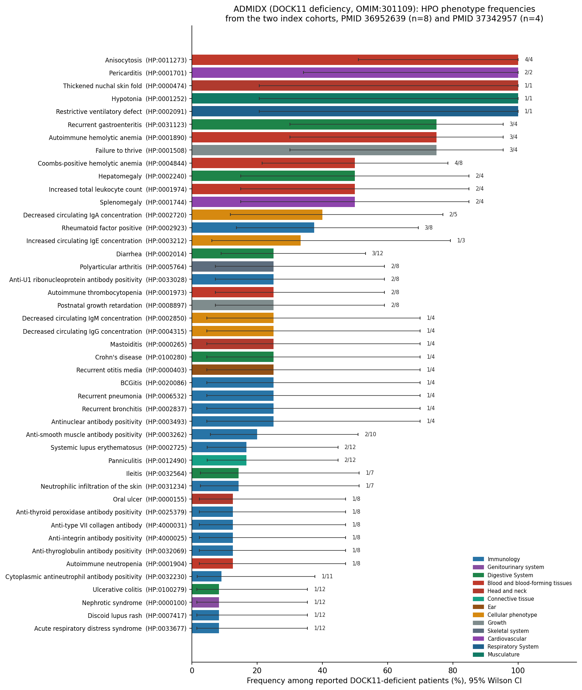
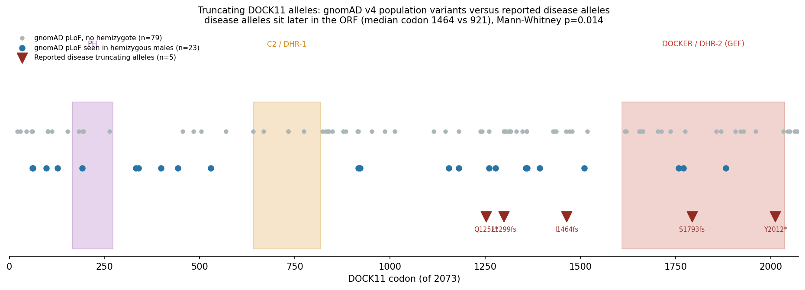
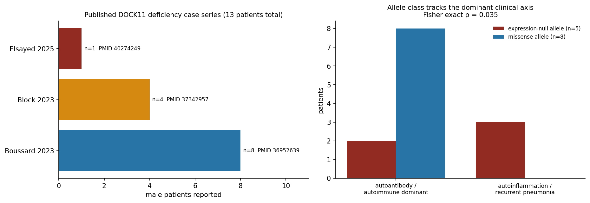
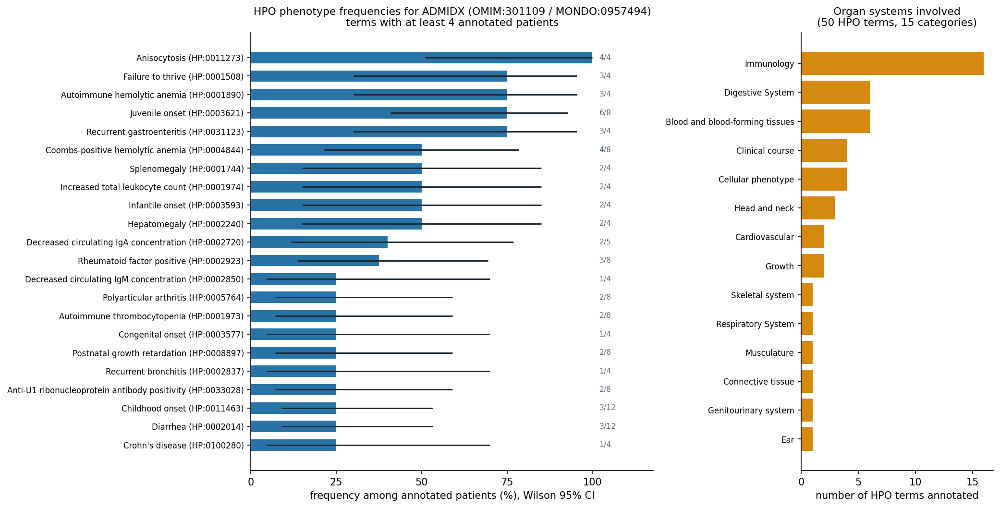

Autoinflammatory Disease Multisystem With Immune Dysregulation X-linked
An X-linked recessive inborn error of immunity caused by hemizygous loss-of-function variants in DOCK11, which encodes an atypical guanine nucleotide exchange factor that loads GTP onto the Rho GTPase CDC42. It belongs to the actinopathies, the group of inborn errors in which a defect in an actin-cytoskeleton regulator produces immunodeficiency, autoinflammation and autoimmunity together rather than any one of them alone. The lesion is a failure of nucleotide exchange. Patient cells show impaired CDC42 activation whether the allele abolishes DOCK11 protein or merely reduces it, and the cellular consequence is cytoskeletal: patient T cells do not form filopodia and migrate abnormally through confined channels. Four cryo-EM structures of full-length human DOCK11 show why reduced protein is as damaging as none, in that activated CDC42 binds a distal armadillo-repeat site and thereby raises the exchange activity of the catalytic domain, so DOCK11 is a feedback switch rather than a linear enzyme. From that single cytoskeletal failure the disease fans out along lineage branches that are separately demonstrated. Patient and Dock11-knockout mouse T cells are overtly activated and produce proinflammatory cytokines with increased NFATc1 nuclear translocation, which is the autoinflammatory arm. Regulatory T cells lose FOXP3 and IKZF2 expression and IL-2-driven STAT5B phosphorylation is impaired, which is the autoantibody arm. Mouse Dock11 knockouts fail to form splenic marginal zone B cells and mount impaired secondary humoral responses, which is the antibody-deficiency arm. A dock11-knockout zebrafish reproduces the anaemia and the abnormal red cell morphology, and the anaemia is rescued by constitutively active CDC42. Allele class, not gene identity, predicts which arm dominates. On re-evaluation of every published patient, alleles that abolish DOCK11 expression track with autoinflammation and recurrent pneumonia while missense alleles that only reduce protein track with autoantibody-driven autoimmunity. That correlation is the basis of the two subtypes recorded here and of the two disease concepts MONDO files beneath this term; it rests on thirteen patients and should be read as a prognostic hypothesis rather than a settled rule.
Ask OpenScientist
Ask a research question about Autoinflammatory Disease Multisystem With Immune Dysregulation X-linked. OpenScientist will conduct autonomous deep research using the Disorder Mechanisms Knowledge Base and PubMed literature (typically 10-30 minutes).
Do not include personal health information in your question. Questions and results are cached in your browser's local storage.
Classifications
Inheritance
1Show evidence (2 references)
Subtypes
2Show evidence (1 reference)
Show evidence (2 references)
Pathophysiology
13Show evidence (1 reference)
Show evidence (1 reference)
Show evidence (2 references)
Show evidence (1 reference)
Show evidence (3 references)
Show evidence (1 reference)
Show evidence (2 references)
Show evidence (2 references)
Show evidence (1 reference)
Show evidence (1 reference)
Show evidence (1 reference)
Show evidence (1 reference)
Show evidence (1 reference)
Pathograph
Phenotypes
8Blood 2
Show evidence (1 reference)
Show evidence (2 references)
Digestive 1
Show evidence (1 reference)
Immune 3
Show evidence (2 references)
Show evidence (1 reference)
Show evidence (1 reference)
Nervous System 1
Show evidence (1 reference)
Respiratory 1
Show evidence (1 reference)
Genetic Associations
1Show evidence (2 references)
Variants (1)
Show evidence (1 reference)
Medical Actions
2Show evidence (2 references)
Show evidence (1 reference)
Diagnosis
2Show evidence (1 reference)
Show evidence (1 reference)
Differential Diagnoses
2Conditions with similar clinical presentations that must be differentiated from Autoinflammatory Disease Multisystem With Immune Dysregulation X-linked:
Show evidence (1 reference)
Show evidence (1 reference)
Animal Models
2Show evidence (1 reference)
Show evidence (1 reference)
Show evidence (1 reference)
Source YAML
click to showname: Autoinflammatory Disease Multisystem With Immune Dysregulation X-linked
creation_date: "2026-11-19T03:30:00Z"
category: Mendelian
synonyms:
- ADMIDX
- DOCK11 deficiency
- X-linked actinopathy with autoimmunity
- autoinflammatory disease, multisystem, with immune dysregulation, X-linked
description: >-
An X-linked recessive inborn error of immunity caused by hemizygous
loss-of-function variants in DOCK11, which encodes an atypical guanine
nucleotide exchange factor that loads GTP onto the Rho GTPase CDC42. It
belongs to the actinopathies, the group of inborn errors in which a defect in
an actin-cytoskeleton regulator produces immunodeficiency, autoinflammation
and autoimmunity together rather than any one of them alone.
The lesion is a failure of nucleotide exchange. Patient cells show impaired
CDC42 activation whether the allele abolishes DOCK11 protein or merely reduces
it, and the cellular consequence is cytoskeletal: patient T cells do not form
filopodia and migrate abnormally through confined channels. Four cryo-EM
structures of full-length human DOCK11 show why reduced protein is as damaging
as none, in that activated CDC42 binds a distal armadillo-repeat site and
thereby raises the exchange activity of the catalytic domain, so DOCK11 is a
feedback switch rather than a linear enzyme.
From that single cytoskeletal failure the disease fans out along lineage
branches that are separately demonstrated. Patient and Dock11-knockout mouse T
cells are overtly activated and produce proinflammatory cytokines with
increased NFATc1 nuclear translocation, which is the autoinflammatory arm.
Regulatory T cells lose FOXP3 and IKZF2 expression and IL-2-driven STAT5B
phosphorylation is impaired, which is the autoantibody arm. Mouse Dock11
knockouts fail to form splenic marginal zone B cells and mount impaired
secondary humoral responses, which is the antibody-deficiency arm. A
dock11-knockout zebrafish reproduces the anaemia and the abnormal red cell
morphology, and the anaemia is rescued by constitutively active CDC42.
Allele class, not gene identity, predicts which arm dominates. On
re-evaluation of every published patient, alleles that abolish DOCK11
expression track with autoinflammation and recurrent pneumonia while missense
alleles that only reduce protein track with autoantibody-driven autoimmunity.
That correlation is the basis of the two subtypes recorded here and of the two
disease concepts MONDO files beneath this term; it rests on thirteen patients
and should be read as a prognostic hypothesis rather than a settled rule.
disease_term:
preferred_term: autoinflammatory disease, multisystem, with immune dysregulation, X-linked
term:
id: MONDO:0957494
label: autoinflammatory disease, multisystem, with immune dysregulation, X-linked
parents:
- Inborn Error of Immunity
- Actinopathy
classifications:
harrisons_chapter:
- classification_value: IMMUNE_RHEUMATOLOGIC
notes: >-
A paediatric inborn error of immunity combining autoimmune cytopenia,
systemic autoinflammation and a variable antibody deficiency.
- classification_value: GENETICS_ENVIRONMENT_DISEASE
notes: >-
A Mendelian single-gene disorder caused by hemizygous loss-of-function
DOCK11 alleles on the male X chromosome.
notes: >-
No IUIS category is recorded. The IUIS 2022 phenotypic classification
(PMID:35748970) is the edition this knowledge base uses, and it predates the
2023 first description of DOCK11 deficiency, so DOCK11 appears in none of its
tables. Assigning a category here would be a guess at where a future edition
will file the disease; the candidate rows are "immune dysregulation" and
"combined immunodeficiency", and the ClinGen curation was performed by the
Primary Immune Regulatory Disorders expert panel.
No GeneReviews chapter covers this disease or DOCK11, checked offline against
the committed Bookshelf index and with a live PubMed title and gene search
(`just check-genereviews --online`), so the phenotype baseline here is taken
from the three index case series (PMID:36952639, PMID:37342957,
PMID:40274249) rather than from a chapter.
Several features of this disease are recorded only in the OMIM clinical
synopsis and the HPO annotation of OMIM:301109, and are not named in any
abstract that can be quoted: pericarditis (2/2 patients), panniculitis
(2/12), discoid lupus (1/12), nephrotic syndrome (1/12), polyarticular
arthritis (2/8), rheumatoid factor positivity (3/8), anti-U1 RNP antibody
(2/8), decreased circulating IgA (2/5), BCGitis after live BCG vaccination
(1/4), recurrent gastroenteritis (3/4), splenomegaly and hepatomegaly (2/4
each), failure to thrive (3/4) and postnatal growth retardation (2/8). None
of the three index series has open full text, and `just fetch-reference
--force` on all three returns the abstract only, so there is nothing to
quote. They are listed here rather than bound as phenotypes carrying a quote
that names something else. Anyone with access to the full texts can promote
them with a real snippet. The two findings with the most clinical weight are
the BCGitis, which is why live vaccines are contraindicated once the
diagnosis is known, and the growth failure.
No treatment other than transplantation and immunoglobulin replacement is
curated. Corticosteroids and steroid-sparing immunosuppression are what the
published patients were actually treated with, but none of the three index
series' abstracts mentions any drug, and the actinopathy review names only
transplantation, so a corticosteroid treatment entry would assert practice
this entry cannot cite. The same applies to the calcineurin and JAK
inhibitors the deep-research report proposed from the NFATc1 and STAT5B
findings; those are untested inference and are left out.
Phenotype frequencies are deliberately absent. The deep-research report
retrieved the 50 HPO annotations of OMIM:301109 with per-term denominators of
2 to 12 patients, which are too small and too heterogeneously ascertained to
map onto FrequencyEnum bands; the aggregated HPO annotation is also not a
citable reference in this knowledge base. Each phenotype here is instead
cited to the series that reported it.
Three analyses in the deep-research report are the provider's own computation
rather than published findings, and none is carried into this entry as
evidence: a positional comparison of gnomAD v4 hemizygous pLoF alleles against
reported disease alleles, a GTEx/Human Protein Atlas expression argument, and
a Fisher test of allele class against phenotype axis. The allele-class
correlation itself is curated, because PMID:40274249 states it in its own
abstract.
inheritance:
- name: X-linked recessive
inheritance_term:
preferred_term: X-linked recessive inheritance
term:
id: HP:0001419
label: X-linked recessive inheritance
description: >-
All reported patients are hemizygous males; carrier females in the published
families are described as unaffected. No manifesting carrier has been
reported, although skewed X-inactivation could in principle produce one.
evidence:
- reference: PMID:37342957
reference_title: "Systemic Inflammation and Normocytic Anemia in DOCK11 Deficiency."
supports: SUPPORT
evidence_source: HUMAN_CLINICAL
quote_role: PRIMARY_RESULT
snippet: "We identified rare, X-linked germline mutations in DOCK11 in the patients, leading to a loss of protein expression in two patients and impaired CDC42 activation in all four patients."
explanation: Establishes the X-linked germline mode of inheritance in the four-patient series.
- reference: PMID:36952639
reference_title: "DOCK11 deficiency in patients with X-linked actinopathy and autoimmunity."
supports: SUPPORT
evidence_source: HUMAN_CLINICAL
quote_role: PRIMARY_RESULT
snippet: "We studied 8 male patients, from 7 unrelated families, with hemizygous DOCK11 missense variants leading to reduced DOCK11 expression."
explanation: Eight hemizygous males from seven unrelated families, consistent with X-linked recessive transmission.
has_subtypes:
- name: Complete Deficiency
display_name: Complete DOCK11 deficiency (expression-null alleles)
description: >-
Truncating, nonsense and canonical splice alleles that abolish DOCK11
protein. On re-evaluation of the published patients this class tracks with
autoinflammation and recurrent pneumonia, and so with the bronchiectasis
that repeated pneumonia produces. This is a difference in which arm of the
disease dominates, not in mechanism: CDC42 activation is impaired in both
classes.
subtype_term:
preferred_term: early-onset immune dysregulation due to DOCK11 complete deficiency
term:
id: MONDO:0958138
label: early-onset immune dysregulation due to DOCK11 complete deficiency
genes:
- preferred_term: DOCK11
term:
id: hgnc:23483
label: DOCK11
evidence:
- reference: PMID:40274249
reference_title: "A novel hemizygous nonsense variant in DOCK11 causes systemic inflammation and immunodeficiency."
supports: SUPPORT
evidence_source: HUMAN_CLINICAL
quote_role: PRIMARY_RESULT
snippet: "variants leading to the complete loss of DOCK11 expression and consequently function rather associate with autoinflammation and recurrent pneumonias, while missense variants, primarily associate with autoantibody-related autoimmune features"
explanation: The re-evaluation of all published patients that defines this stratum against the missense one.
- name: Partial Deficiency
display_name: Partial DOCK11 deficiency (hypomorphic missense alleles)
description: >-
Missense alleles that reduce steady-state DOCK11 protein without abolishing
it. This class tracks with autoantibody-driven autoimmunity: lupus,
Coombs-positive haemolytic anaemia and autoimmune cytopenia. The cryo-EM
finding that activated CDC42 feeds back onto DOCK11 to raise its own
exchange activity explains why a merely reduced protein level still causes
disease, because output is thresholded rather than proportional.
subtype_term:
preferred_term: early-onset autoimmune disorder due to DOCK11 partial deficiency
term:
id: MONDO:0958137
label: early-onset autoimmune disorder due to DOCK11 partial deficiency
genes:
- preferred_term: DOCK11
term:
id: hgnc:23483
label: DOCK11
evidence:
- reference: PMID:36952639
reference_title: "DOCK11 deficiency in patients with X-linked actinopathy and autoimmunity."
supports: SUPPORT
evidence_source: HUMAN_CLINICAL
quote_role: PRIMARY_RESULT
snippet: "We studied 8 male patients, from 7 unrelated families, with hemizygous DOCK11 missense variants leading to reduced DOCK11 expression."
explanation: Defines the hypomorphic missense stratum and its reduced-protein mechanism.
- reference: PMID:36952639
reference_title: "DOCK11 deficiency in patients with X-linked actinopathy and autoimmunity."
supports: SUPPORT
evidence_source: HUMAN_CLINICAL
quote_role: PRIMARY_RESULT
snippet: "The patients were presenting with early-onset autoimmunity, including cytopenia, systemic lupus erythematosus, skin, and digestive manifestations."
explanation: The autoimmune-dominant presentation that distinguishes this stratum.
genetic:
- name: DOCK11
variant_origin: GERMLINE
gene_term:
preferred_term: DOCK11
term:
id: hgnc:23483
label: DOCK11
relationship_type: CAUSATIVE
notes: >-
Reported disease alleles are nonsense, frameshift and canonical splice
variants that remove or disable the catalytic DOCKER (DHR-2) domain, and
missense variants that reduce steady-state protein. No gain-of-function
allele has been reported in a patient. The missense alleles from the
eight-patient series are not deposited with pathogenic or likely-pathogenic
status, so a clinical laboratory encountering a DOCK11 missense variant will
usually return a variant of uncertain significance; functional confirmation
by CDC42-GTP loading or a filopodium assay is therefore part of the
diagnostic path rather than an optional extra.
gene_disease_validity:
- validity_classification: STRONG
classified_by: CLINGEN
external_id: CGGV:assertion_4355c917-09ad-428b-a2d5-2a6a1b609dd6-2025-08-19T160000.000Z
evidence:
- reference: CGGV:assertion_4355c917-09ad-428b-a2d5-2a6a1b609dd6-2025-08-19T160000.000Z
reference_title: DOCK11 / autoinflammatory disease, multisystem, with immune dysregulation, X-linked (Strong)
supports: SUPPORT
evidence_source: OTHER
snippet: "DOCK11 | HGNC:23483 | autoinflammatory disease, multisystem, with immune dysregulation, X-linked | MONDO:0957494 | XL | Strong"
explanation: ClinGen Primary Immune Regulatory Disorders GCEP classification for this MONDO entity.
evidence:
- reference: CGGV:assertion_4355c917-09ad-428b-a2d5-2a6a1b609dd6-2025-08-19T160000.000Z
reference_title: DOCK11 / autoinflammatory disease, multisystem, with immune dysregulation, X-linked (Strong)
supports: SUPPORT
evidence_source: OTHER
snippet: "Three years must elapse from the first proposal of the assertion to reach a definitive classification without any valid contradictory evidence."
explanation: Records why the tier is Strong rather than Definitive, which is an age-of-assertion rule and not a weakness in the evidence.
- reference: PMID:36952639
reference_title: "DOCK11 deficiency in patients with X-linked actinopathy and autoimmunity."
supports: SUPPORT
evidence_source: HUMAN_CLINICAL
quote_role: PRIMARY_RESULT
snippet: "DOCK11 deficiency is a new X-linked immune-related actinopathy leading to impaired CDC42 activity and STAT5 activation"
explanation: The founding description of the gene-disease relationship.
variants:
- name: "DOCK11 c.3754C>T p.(Gln1252Ter)"
clinical_significance: PATHOGENIC
description: >-
Hemizygous nonsense allele abolishing DOCK11 protein, reported in a
patient with recurrent pneumonia, bronchiectasis and infection-triggered
hyperinflammation.
evidence:
- reference: PMID:40274249
reference_title: "A novel hemizygous nonsense variant in DOCK11 causes systemic inflammation and immunodeficiency."
supports: SUPPORT
evidence_source: HUMAN_CLINICAL
quote_role: PRIMARY_RESULT
snippet: "we identified a novel variant in DOCK11 (c.3754C > T, p.(Q1252*)), leading to loss of protein expression, in a patient with a history of recurrent pneumonia, bronchiectasis, infection-triggered hyperinflammation and persistent systemic inflammation"
explanation: Reports the allele, its effect on protein expression, and the phenotype of the carrier.
pathophysiology:
- name: Hemizygous DOCK11 Loss-of-Function Allele
biological_scale: MOLECULAR
description: >-
A single DOCK11 allele on the male X chromosome, either truncating or
missense. There is no second copy to compensate, so the allele's effect on
protein is the cell's whole DOCK11 complement.
genetic_context:
variant_origin: GERMLINE
functional_impact_category: LOSS_OF_FUNCTION
genes:
- preferred_term: DOCK11
term:
id: hgnc:23483
label: DOCK11
evidence:
- reference: PMID:37342957
reference_title: "Systemic Inflammation and Normocytic Anemia in DOCK11 Deficiency."
supports: SUPPORT
evidence_source: HUMAN_CLINICAL
quote_role: PRIMARY_RESULT
snippet: "Germline hemizygous loss-of-function mutations affecting the actin regulator DOCK11 were shown to cause a previously unknown inborn error of hematopoiesis and immunity characterized by severe immune dysregulation and systemic inflammation, recurrent infections, and anemia."
explanation: Establishes the germline hemizygous loss-of-function lesion as the cause.
downstream:
- target: Reduced or Absent DOCK11 Protein
causal_link_type: DIRECT
evidence:
- reference: PMID:37342957
reference_title: "Systemic Inflammation and Normocytic Anemia in DOCK11 Deficiency."
supports: SUPPORT
evidence_source: HUMAN_CLINICAL
quote_role: PRIMARY_RESULT
snippet: "We identified rare, X-linked germline mutations in DOCK11 in the patients, leading to a loss of protein expression in two patients and impaired CDC42 activation in all four patients."
explanation: The allele is shown to reduce protein expression in patient cells, which is the step this edge asserts.
- name: Reduced or Absent DOCK11 Protein
biological_scale: MOLECULAR
description: >-
Truncating alleles abolish the protein; missense alleles lower its
steady-state level. Both converge on the same functional deficit, which is
why the two allele classes differ in which clinical arm dominates rather
than in mechanism.
evidence:
- reference: PMID:36952639
reference_title: "DOCK11 deficiency in patients with X-linked actinopathy and autoimmunity."
supports: SUPPORT
evidence_source: HUMAN_CLINICAL
quote_role: PRIMARY_RESULT
snippet: "We studied 8 male patients, from 7 unrelated families, with hemizygous DOCK11 missense variants leading to reduced DOCK11 expression."
explanation: Reduced steady-state DOCK11 protein measured in the missense cohort.
downstream:
- target: Failure of CDC42 Nucleotide Exchange
causal_link_type: DIRECT
evidence:
- reference: PMID:37342957
reference_title: "Systemic Inflammation and Normocytic Anemia in DOCK11 Deficiency."
supports: SUPPORT
evidence_source: HUMAN_CLINICAL
quote_role: PRIMARY_RESULT
snippet: "We identified rare, X-linked germline mutations in DOCK11 in the patients, leading to a loss of protein expression in two patients and impaired CDC42 activation in all four patients."
explanation: Loss of protein and impaired CDC42 activation are measured in the same patients, which is the step from protein level to exchange failure.
- name: Failure of CDC42 Nucleotide Exchange
biological_scale: MOLECULAR
description: >-
DOCK11's catalytic DOCKER (DHR-2) domain loads GTP onto CDC42, and it does
so for CDC42 specifically rather than for the related GTPases TC10 and TCL.
Patient cells show impaired CDC42 activation whichever allele class they
carry.
genes:
- preferred_term: DOCK11
term:
id: hgnc:23483
label: DOCK11
molecular_functions:
- preferred_term: CDC42 guanyl-nucleotide exchange factor activity
modifier: DECREASED
term:
id: GO:0005085
label: guanyl-nucleotide exchange factor activity
evidence:
- reference: PMID:15710388
reference_title: "Zizimin2: a novel, DOCK180-related Cdc42 guanine nucleotide exchange factor expressed predominantly in lymphocytes."
supports: SUPPORT
evidence_source: IN_VITRO
quote_role: PRIMARY_RESULT
snippet: "Zizimin2 and zizimin1 have similar primary structures and both proteins bound and activated Cdc42 but not the Cdc42-related proteins TC10 or TCL."
explanation: Establishes that DOCK11 (zizimin2) is a CDC42-specific exchange factor, which is what makes CDC42 the relevant target of the lesion.
- reference: PMID:36952639
reference_title: "DOCK11 deficiency in patients with X-linked actinopathy and autoimmunity."
supports: SUPPORT
evidence_source: HUMAN_CLINICAL
quote_role: PRIMARY_RESULT
snippet: "Patients' platelets exhibited abnormal ultrastructural morphology and spreading as well as impaired CDC42 activity."
explanation: Impaired CDC42 activity measured directly in patient cells.
downstream:
- target: Collapse of the CDC42-GTP Positive Feedback Loop
causal_link_type: DIRECT
evidence:
- reference: PMID:42837459
reference_title: "Structural basis for membrane-dependent positive feedback regulation of DOCK11 by activated Cdc42."
supports: SUPPORT
evidence_source: IN_VITRO
directness: INDIRECT
quote_role: PRIMARY_RESULT
snippet: "binding of activated Cdc42 is critical for enhancing the membrane-dependent nucleotide exchange activity of DOCK11, promoting its localization to the plasma membrane, and facilitating intracellular activation of Cdc42"
explanation: >-
The feedback loop is demonstrated for wild-type DOCK11, so that failed
exchange prevents its ignition follows by inference rather than by direct
measurement in patient alleles.
- target: Failure of Filopodium Assembly and Confined Migration
causal_link_type: DIRECT
evidence:
- reference: PMID:22494997
reference_title: "Age-related guanine nucleotide exchange factor, mouse Zizimin2, induces filopodia in bone marrow-derived dendritic cells."
supports: SUPPORT
evidence_source: MODEL_ORGANISM
quote_role: PRIMARY_RESULT
snippet: "Zizimin2 is an immune-related and age-regulated guanine nucleotide exchange factor, which facilitates filopodial formation through activation of Cdc42, which results in activation of cell migration"
explanation: Establishes the exchange-to-filopodium-to-migration step for DOCK11 acting through CDC42.
- name: Collapse of the CDC42-GTP Positive Feedback Loop
biological_scale: MOLECULAR
description: >-
Four cryo-EM structures of full-length human DOCK11 show that activated
CDC42 engages a distal armadillo-repeat site separate from the catalytic
domain, driving DOCK11 to the plasma membrane and raising its exchange rate.
DOCK11 is therefore a switch with gain, and below a threshold the loop does
not ignite at all. This is the structural reason a missense allele that only
reduces protein can cause disease as severe as a null allele.
molecular_functions:
- preferred_term: CDC42 binding at the distal armadillo-repeat site
modifier: DECREASED
term:
id: GO:0031267
label: small GTPase binding
evidence:
- reference: PMID:42837459
reference_title: "Structural basis for membrane-dependent positive feedback regulation of DOCK11 by activated Cdc42."
supports: SUPPORT
evidence_source: IN_VITRO
quote_role: PRIMARY_RESULT
snippet: "DOCK11 predominantly adopts a U-shaped dimer that binds to nucleotide-free Cdc42 via the catalytic domain, whereas activated Cdc42 engages a distal site within the armadillo-repeat domain."
explanation: The two-site architecture that makes the feedback loop possible.
downstream:
- target: Failure of Filopodium Assembly and Confined Migration
causal_link_type: DIRECT
- name: Failure of Filopodium Assembly and Confined Migration
biological_scale: CELLULAR
description: >-
Sub-threshold CDC42-GTP leaves CDC42-dependent actin nucleation unsupported.
Patient T cells form no filopodia and migrate abnormally, and activated
patient T cells and B-lymphoblastoid lines show aberrant protrusions and
abnormal speed in confined channels with altered actin polymerisation.
Knocking DOCK11 down in healthy donor cells reproduces both.
biological_processes:
- preferred_term: positive regulation of filopodium assembly
modifier: DECREASED
term:
id: GO:0051491
label: positive regulation of filopodium assembly
- preferred_term: leukocyte migration
modifier: DECREASED
term:
id: GO:0050900
label: leukocyte migration
cell_types:
- preferred_term: T cell
term:
id: CL:0000084
label: T cell
- preferred_term: monocyte-derived dendritic cell
term:
id: CL:0000451
label: dendritic cell
evidence:
- reference: PMID:37342957
reference_title: "Systemic Inflammation and Normocytic Anemia in DOCK11 Deficiency."
supports: SUPPORT
evidence_source: HUMAN_CLINICAL
quote_role: PRIMARY_RESULT
snippet: "Patient-derived T cells did not form filopodia and showed abnormal migration."
explanation: The defining cellular phenotype, measured in patient cells.
- reference: PMID:36952639
reference_title: "DOCK11 deficiency in patients with X-linked actinopathy and autoimmunity."
supports: SUPPORT
evidence_source: HUMAN_CLINICAL
quote_role: PRIMARY_RESULT
snippet: "In vitro activated T cells and B-lymphoblastoid cell lines from patients exhibited aberrant protrusions and abnormal migration speed in confined channels concomitant with altered actin polymerization during migration."
explanation: Independently reproduces the migration and actin defect in a second cohort and a second cell type.
- reference: PMID:36952639
reference_title: "DOCK11 deficiency in patients with X-linked actinopathy and autoimmunity."
supports: SUPPORT
evidence_source: IN_VITRO
quote_role: PRIMARY_RESULT
snippet: "Knock down of DOCK11 recapitulated these abnormal cellular phenotypes in monocytes-derived dendritic cells and primary activated T cells from healthy controls."
explanation: Knockdown in healthy donor cells shows the cellular phenotype is caused by DOCK11 loss rather than by patient background.
downstream:
- target: T Cell Hyperactivation with NFATc1 Nuclear Translocation
causal_link_type: INDIRECT_KNOWN_INTERMEDIATES
evidence:
- reference: PMID:37342957
reference_title: "Systemic Inflammation and Normocytic Anemia in DOCK11 Deficiency."
supports: SUPPORT
evidence_source: HUMAN_CLINICAL
directness: INDIRECT
quote_role: PRIMARY_RESULT
snippet: "the patient-derived T cells, as well as the T cells from Dock11-knockout mice, showed overt activation and production of proinflammatory cytokines that were associated with an increased degree of nuclear translocation of nuclear factor of activated T cell 1 (NFATc1)"
explanation: >-
Both the cytoskeletal defect and the T-cell hyperactivation are measured
in the same cells, but the paper reports them as associated rather than
establishing that one causes the other.
- target: Regulatory T Cell Identity Loss
causal_link_type: INDIRECT_KNOWN_INTERMEDIATES
evidence:
- reference: PMID:36952639
reference_title: "DOCK11 deficiency in patients with X-linked actinopathy and autoimmunity."
supports: SUPPORT
evidence_source: HUMAN_CLINICAL
directness: INDIRECT
quote_role: PRIMARY_RESULT
snippet: "we also observed abnormal regulatory T-cell (Treg) phenotype with profoundly reduced FOXP3 and IKZF2 expression"
explanation: >-
The Treg defect is measured in the same patients as the migration
defect; the causal step between them is not itself demonstrated.
- target: Marginal Zone B Cell Development Failure
causal_link_type: INDIRECT_KNOWN_INTERMEDIATES
evidence:
- reference: PMID:25729399
reference_title: "The immunosenescence-related gene Zizimin2 is associated with early bone marrow B cell development and marginal zone B cell formation."
supports: SUPPORT
evidence_source: MODEL_ORGANISM
quote_role: PRIMARY_RESULT
snippet: "In addition, an examination of B cell-specific Ziz2 KO mice revealed that Ziz2 was intrinsically required for MZ B cell development, but not for mature follicular B cells."
explanation: B-cell-intrinsic requirement for DOCK11 in marginal zone B cell development, from a conditional knockout.
- target: Erythroid Morphogenesis Defect
causal_link_type: INDIRECT_KNOWN_INTERMEDIATES
evidence:
- reference: PMID:37342957
reference_title: "Systemic Inflammation and Normocytic Anemia in DOCK11 Deficiency."
supports: SUPPORT
evidence_source: MODEL_ORGANISM
directness: INDIRECT
quote_role: PRIMARY_RESULT
snippet: "Anemia and aberrant erythrocyte morphologic features were recapitulated in a newly generated dock11-knockout zebrafish model, and anemia was amenable to rescue on ectopic expression of constitutively active CDC42."
explanation: >-
The CDC42 rescue places the erythroid defect downstream of failed CDC42
activation; the step is shown in zebrafish, not in human erythroblasts.
- name: T Cell Hyperactivation with NFATc1 Nuclear Translocation
biological_scale: CELLULAR
description: >-
Patient T cells and T cells from Dock11-knockout mice are overtly activated
and secrete proinflammatory cytokines, with increased nuclear translocation
of NFATc1. This is the autoinflammatory arm of the disease.
biological_processes:
- preferred_term: positive regulation of T cell activation
modifier: INCREASED
term:
id: GO:0050870
label: positive regulation of T cell activation
cell_types:
- preferred_term: T cell
term:
id: CL:0000084
label: T cell
evidence:
- reference: PMID:37342957
reference_title: "Systemic Inflammation and Normocytic Anemia in DOCK11 Deficiency."
supports: SUPPORT
evidence_source: HUMAN_CLINICAL
quote_role: PRIMARY_RESULT
snippet: "the patient-derived T cells, as well as the T cells from Dock11-knockout mice, showed overt activation and production of proinflammatory cytokines that were associated with an increased degree of nuclear translocation of nuclear factor of activated T cell 1 (NFATc1)"
explanation: Measured in both patient cells and the knockout mouse.
downstream:
- target: Systemic Autoinflammation
causal_link_type: DIRECT
- name: Regulatory T Cell Identity Loss
biological_scale: CELLULAR
description: >-
Patient regulatory T cells show profoundly reduced FOXP3 and IKZF2
expression, and patient lymphocytes show reduced proliferation with impaired
STAT5B phosphorylation after interleukin-2 stimulation. Since IL-2-driven
STAT5 signalling maintains FOXP3, these two findings are the same lesion
read at two levels.
biological_processes:
- preferred_term: regulatory T cell differentiation
modifier: DECREASED
term:
id: GO:0045066
label: regulatory T cell differentiation
cell_types:
- preferred_term: regulatory T cell
term:
id: CL:0000815
label: regulatory T cell
evidence:
- reference: PMID:36952639
reference_title: "DOCK11 deficiency in patients with X-linked actinopathy and autoimmunity."
supports: SUPPORT
evidence_source: HUMAN_CLINICAL
quote_role: PRIMARY_RESULT
snippet: "we also observed abnormal regulatory T-cell (Treg) phenotype with profoundly reduced FOXP3 and IKZF2 expression"
explanation: The Treg identity defect measured in patient cells.
- reference: PMID:36952639
reference_title: "DOCK11 deficiency in patients with X-linked actinopathy and autoimmunity."
supports: SUPPORT
evidence_source: HUMAN_CLINICAL
quote_role: PRIMARY_RESULT
snippet: "we found reduced T-cell proliferation and impaired STAT5B phosphorylation upon interleukin-2 stimulation of the patients' lymphocytes"
explanation: The IL-2 to STAT5B signalling defect that accompanies the loss of FOXP3.
downstream:
- target: Autoantibody-Mediated Autoimmunity
causal_link_type: INDIRECT_KNOWN_INTERMEDIATES
- name: Marginal Zone B Cell Development Failure
biological_scale: CELLULAR
description: >-
Dock11-knockout mice have a reduced marginal zone B cell fraction, and a
B-cell-conditional knockout shows the requirement is B-cell intrinsic and
specific to the marginal zone compartment rather than to follicular B cells.
Secondary humoral responses to protein antigen are impaired in the same
model.
biological_processes:
- preferred_term: marginal zone B cell differentiation
modifier: DECREASED
term:
id: GO:0002315
label: marginal zone B cell differentiation
cell_types:
- preferred_term: marginal zone B cell
term:
id: CL:0000845
label: marginal zone B cell of spleen
evidence:
- reference: PMID:25729399
reference_title: "The immunosenescence-related gene Zizimin2 is associated with early bone marrow B cell development and marginal zone B cell formation."
supports: SUPPORT
evidence_source: MODEL_ORGANISM
quote_role: PRIMARY_RESULT
snippet: "The results revealed that Ziz2 KO mice had a higher percentage of early bone marrow B cells (Fraction A), but a reduced fraction of marginal zone (MZ) B cells."
explanation: The marginal zone deficit in the germline knockout.
- reference: PMID:34980182
reference_title: "The immunosenescence-related factor DOCK11 is involved in secondary immune responses of B cells."
supports: SUPPORT
evidence_source: MODEL_ORGANISM
quote_role: PRIMARY_RESULT
snippet: "The lack of DOCK11 in B cells resulted in the impaired induction of antibody-producing cells upon secondary immunization with protein antigen."
explanation: The functional humoral consequence of DOCK11 loss in B cells.
downstream:
- target: Impaired Humoral Response and Antibody Deficiency
causal_link_type: DIRECT
- name: Erythroid Morphogenesis Defect
biological_scale: CELLULAR
description: >-
A dock11-knockout zebrafish reproduces both the anaemia and the abnormal red
cell morphology seen in patients, and the anaemia is rescued by ectopic
expression of constitutively active CDC42, which places the defect
downstream of failed CDC42 activation. The cell-intrinsic mechanism in human
erythroblasts has not been established.
biological_processes:
- preferred_term: erythrocyte differentiation
modifier: DECREASED
term:
id: GO:0030218
label: erythrocyte differentiation
cell_types:
- preferred_term: erythrocyte
term:
id: CL:0000232
label: erythrocyte
evidence:
- reference: PMID:37342957
reference_title: "Systemic Inflammation and Normocytic Anemia in DOCK11 Deficiency."
supports: SUPPORT
evidence_source: MODEL_ORGANISM
quote_role: PRIMARY_RESULT
snippet: "Anemia and aberrant erythrocyte morphologic features were recapitulated in a newly generated dock11-knockout zebrafish model, and anemia was amenable to rescue on ectopic expression of constitutively active CDC42."
explanation: Recapitulation plus CDC42 rescue in the zebrafish model.
downstream:
- target: Anisocytosis
causal_link_type: DIRECT
evidence:
- reference: PMID:37342957
reference_title: "Systemic Inflammation and Normocytic Anemia in DOCK11 Deficiency."
supports: SUPPORT
evidence_source: HUMAN_CLINICAL
quote_role: PRIMARY_RESULT
snippet: "four patients from four unrelated families who presented with infections, early-onset severe immune dysregulation, normocytic anemia of variable severity associated with anisopoikilocytosis, and developmental delay"
explanation: The anaemia and abnormal red cell morphology as they present in patients.
- name: Systemic Autoinflammation
biological_scale: ORGANISM
description: >-
Sustained proinflammatory cytokine output produces recurrent fever,
serositis including pericarditis, panniculitis and hepatosplenomegaly. The
autoinflammatory arm is episodic, superimposed on the chronic cytopenia and
gut disease.
evidence:
- reference: PMID:40274249
reference_title: "A novel hemizygous nonsense variant in DOCK11 causes systemic inflammation and immunodeficiency."
supports: SUPPORT
evidence_source: HUMAN_CLINICAL
quote_role: PRIMARY_RESULT
snippet: "Features of immune dysregulation have been reported in all so far identified male patients with damaging variants in DOCK11, commonly manifesting with autoimmune cytopenias, inflammatory bowel disease, benign lymphoproliferation and systemic inflammation."
explanation: Systemic inflammation across every reported patient.
downstream:
- target: Colitis
causal_link_type: INDIRECT_KNOWN_INTERMEDIATES
- target: Lymphoproliferative disorder
causal_link_type: INDIRECT_KNOWN_INTERMEDIATES
- target: Chronic Inflammatory Burden on Development
causal_link_type: DIRECT
- name: Autoantibody-Mediated Autoimmunity
biological_scale: ORGANISM
description: >-
Loss of regulatory T cell identity removes the restraint on autoreactive B
cell help, and the result is a broad autoantibody profile with
Coombs-positive haemolytic anaemia, autoimmune thrombocytopenia, lupus and a
positive rheumatoid factor.
evidence:
- reference: PMID:36952639
reference_title: "DOCK11 deficiency in patients with X-linked actinopathy and autoimmunity."
supports: SUPPORT
evidence_source: HUMAN_CLINICAL
quote_role: PRIMARY_RESULT
snippet: "The patients were presenting with early-onset autoimmunity, including cytopenia, systemic lupus erythematosus, skin, and digestive manifestations."
explanation: The autoantibody-driven arm as it presents clinically.
downstream:
- target: Autoimmune cytopenia
causal_link_type: DIRECT
- target: Systemic lupus erythematosus
causal_link_type: DIRECT
- name: Impaired Humoral Response and Antibody Deficiency
biological_scale: ORGANISM
description: >-
Loss of the marginal zone compartment and of secondary humoral responses
produces a variable antibody deficiency, with low IgA the reported
laboratory finding, and recurrent sinopulmonary infection that accumulates
into bronchiectasis in patients with expression-null alleles.
evidence:
- reference: PMID:40274249
reference_title: "A novel hemizygous nonsense variant in DOCK11 causes systemic inflammation and immunodeficiency."
supports: SUPPORT
evidence_source: HUMAN_CLINICAL
quote_role: PRIMARY_RESULT
snippet: "Hemizygous germline loss-of-function variants in DOCK11, the gene encoding the dedicator of cytokinesis 11 (DOCK11) have been recently identified to cause variable immunodeficiency and immune dysregulation."
explanation: The variable immunodeficiency arm of the disease.
downstream:
- target: Recurrent pneumonia
causal_link_type: DIRECT
- name: Chronic Inflammatory Burden on Development
biological_scale: ORGANISM
description: >-
Chronic inflammation, transfusion- or immunosuppression-dependent anaemia
and chronic colitis together carry a developmental and growth burden.
Developmental delay is the part of that burden a quotable source names;
failure to thrive and postnatal growth retardation are recorded in the OMIM
clinical synopsis only and are described in this entry's notes instead.
evidence:
- reference: PMID:37342957
reference_title: "Systemic Inflammation and Normocytic Anemia in DOCK11 Deficiency."
supports: SUPPORT
evidence_source: HUMAN_CLINICAL
directness: INDIRECT
quote_role: PRIMARY_RESULT
snippet: "four patients from four unrelated families who presented with infections, early-onset severe immune dysregulation, normocytic anemia of variable severity associated with anisopoikilocytosis, and developmental delay"
explanation: >-
The series reports the growth and developmental burden alongside the
inflammation; that the inflammation causes it is an inference.
downstream:
- target: Global developmental delay
causal_link_type: DIRECT
phenotypes:
- category: Hematologic
name: Anisocytosis
description: >-
Normocytic anaemia with anisopoikilocytosis on the blood film is the
hallmark haematological finding, and it is what distinguishes this
actinopathy from the others.
phenotype_term:
preferred_term: Anisocytosis
term:
id: HP:0011273
label: Anisocytosis
evidence:
- reference: PMID:37342957
reference_title: Systemic Inflammation and Normocytic Anemia in DOCK11 Deficiency.
supports: SUPPORT
evidence_source: HUMAN_CLINICAL
quote_role: PRIMARY_RESULT
snippet: "normocytic anemia of variable severity associated with anisopoikilocytosis"
explanation: The anaemia and red cell morphology as reported in patients.
- category: Hematologic
name: Autoimmune cytopenia
description: >-
Immune-mediated destruction of blood cells is the commonest autoimmune
manifestation, reported in every published patient series. The individual
lineages affected - Coombs-positive haemolytic anaemia, immune
thrombocytopenia and autoimmune neutropenia - are recorded in the OMIM
clinical synopsis for this disease but are not named in any abstract that
can be quoted here, so this entry binds the finding at the level its
sources state it.
phenotype_term:
preferred_term: Autoimmune cytopenia
term:
id: HP:5210419
label: Autoimmune cytopenia
evidence:
- reference: PMID:40274249
reference_title: A novel hemizygous nonsense variant in DOCK11 causes systemic inflammation and immunodeficiency.
supports: SUPPORT
evidence_source: HUMAN_CLINICAL
quote_role: PRIMARY_RESULT
snippet: "commonly manifesting with autoimmune cytopenias, inflammatory bowel disease, benign lymphoproliferation and systemic inflammation"
explanation: Autoimmune cytopenia named as a common manifestation across all reported patients.
- reference: PMID:36952639
reference_title: DOCK11 deficiency in patients with X-linked actinopathy and autoimmunity.
supports: SUPPORT
evidence_source: HUMAN_CLINICAL
quote_role: PRIMARY_RESULT
snippet: "early-onset autoimmunity, including cytopenia, systemic lupus erythematosus, skin, and digestive manifestations"
explanation: Cytopenia named within the autoimmune presentation of the eight-patient series.
- category: Immunologic
name: Systemic lupus erythematosus
description: Lupus, reported in the missense-allele patients.
phenotype_term:
preferred_term: Systemic lupus erythematosus
term:
id: HP:0002725
label: Systemic lupus erythematosus
evidence:
- reference: PMID:36952639
reference_title: DOCK11 deficiency in patients with X-linked actinopathy and autoimmunity.
supports: SUPPORT
evidence_source: HUMAN_CLINICAL
quote_role: PRIMARY_RESULT
snippet: "The patients were presenting with early-onset autoimmunity, including cytopenia, systemic lupus erythematosus, skin, and digestive manifestations."
explanation: Lupus named directly in the eight-patient series.
- category: Gastrointestinal
name: Colitis
description: >-
Inflammatory bowel disease, which the published cases record as Crohn
disease in one patient and ulcerative colitis in another. The entry binds
colitis rather than either named diagnosis, because the quotable sources
state the finding as inflammatory bowel disease and both reported forms are
colitides; binding Crohn disease would be narrower than the evidence.
phenotype_term:
preferred_term: inflammatory bowel disease-like colitis
term:
id: HP:0002583
label: Colitis
evidence:
- reference: PMID:40274249
reference_title: A novel hemizygous nonsense variant in DOCK11 causes systemic inflammation and immunodeficiency.
supports: SUPPORT
evidence_source: HUMAN_CLINICAL
quote_role: PRIMARY_RESULT
snippet: "commonly manifesting with autoimmune cytopenias, inflammatory bowel disease, benign lymphoproliferation and systemic inflammation"
explanation: Inflammatory bowel disease named as a common manifestation across reported patients.
- category: Hematologic
name: Lymphoproliferative disorder
description: >-
Benign lymphoproliferation, the reported finding of which hepatomegaly and
splenomegaly are the physical signs. The organomegaly itself is recorded in
the OMIM clinical synopsis rather than in a quotable abstract, so this entry
binds the lymphoproliferation its sources name.
phenotype_term:
preferred_term: benign lymphoproliferation
term:
id: HP:0005523
label: Lymphoproliferative disorder
evidence:
- reference: PMID:40274249
reference_title: A novel hemizygous nonsense variant in DOCK11 causes systemic inflammation and immunodeficiency.
supports: SUPPORT
evidence_source: HUMAN_CLINICAL
quote_role: PRIMARY_RESULT
snippet: "commonly manifesting with autoimmune cytopenias, inflammatory bowel disease, benign lymphoproliferation and systemic inflammation"
explanation: Benign lymphoproliferation named as a common manifestation across reported patients.
- reference: PMID:39644982
reference_title: "Current landscape of monogenic autoinflammatory actinopathies: A literature review."
supports: SUPPORT
evidence_source: OTHER
quote_role: REVIEW_SYNTHESIS
snippet: "Some of these diseases exhibit specific features, such as a risk of macrophage activation syndrome (MAS) or a predisposition to atopy or lymphoproliferation."
explanation: >-
The review names lymphoproliferation as a feature distinguishing some
actinopathies, of which it treats DOCK11 deficiency as one.
directness: INDIRECT
- category: Respiratory
name: Recurrent pneumonia
description: >-
Recurrent bacterial pneumonia, reported with the expression-null alleles and
the entry point to progressive airway damage.
phenotype_term:
preferred_term: Recurrent pneumonia
term:
id: HP:0006532
label: Recurrent pneumonia
evidence:
- reference: PMID:40274249
reference_title: A novel hemizygous nonsense variant in DOCK11 causes systemic inflammation and immunodeficiency.
supports: SUPPORT
evidence_source: HUMAN_CLINICAL
quote_role: PRIMARY_RESULT
snippet: "variants leading to the complete loss of DOCK11 expression and consequently function rather associate with autoinflammation and recurrent pneumonias"
explanation: Recurrent pneumonia as the infection phenotype of the expression-null stratum.
sequelae:
- target: Bronchiectasis
description: Repeated pneumonia produces irreversible airway dilatation.
evidence:
- reference: PMID:40274249
reference_title: A novel hemizygous nonsense variant in DOCK11 causes systemic inflammation and immunodeficiency.
supports: SUPPORT
evidence_source: HUMAN_CLINICAL
quote_role: PRIMARY_RESULT
snippet: "a patient with a history of recurrent pneumonia, bronchiectasis, infection-triggered hyperinflammation and persistent systemic inflammation"
explanation: Recurrent pneumonia and bronchiectasis reported together in the same patient.
- category: Respiratory
name: Bronchiectasis
description: >-
Irreversible airway dilatation accumulating from recurrent pneumonia. This
is the preventable end point that makes early diagnosis and infection
prophylaxis worthwhile.
phenotype_term:
preferred_term: Bronchiectasis
term:
id: HP:0002110
label: Bronchiectasis
evidence:
- reference: PMID:40274249
reference_title: A novel hemizygous nonsense variant in DOCK11 causes systemic inflammation and immunodeficiency.
supports: SUPPORT
evidence_source: HUMAN_CLINICAL
quote_role: PRIMARY_RESULT
snippet: "a patient with a history of recurrent pneumonia, bronchiectasis, infection-triggered hyperinflammation and persistent systemic inflammation"
explanation: Bronchiectasis reported in the nonsense-variant patient.
- category: Neurologic
name: Global developmental delay
description: >-
Developmental delay was reported in the four-patient series alongside the
anaemia and immune dysregulation. Failure to thrive and postnatal growth
retardation are recorded in the OMIM clinical synopsis for this disease but
are not named in any quotable abstract, so growth is described in this
entry's notes rather than bound as a phenotype.
phenotype_term:
preferred_term: Global developmental delay
term:
id: HP:0001263
label: Global developmental delay
evidence:
- reference: PMID:37342957
reference_title: Systemic Inflammation and Normocytic Anemia in DOCK11 Deficiency.
supports: SUPPORT
evidence_source: HUMAN_CLINICAL
quote_role: PRIMARY_RESULT
snippet: "early-onset severe immune dysregulation, normocytic anemia of variable severity associated with anisopoikilocytosis, and developmental delay"
explanation: Developmental delay named in the presenting features of the four-patient series.
diagnosis:
- name: DOCK11 protein and CDC42 activation testing
description: >-
Because most DOCK11 missense variants return as variants of uncertain
significance, functional confirmation is part of the diagnostic path.
Immunoblot for DOCK11 protein in patient mononuclear cells separates
expression-null from hypomorphic alleles and therefore carries the
prognostic meaning of the allele classes recorded above; a CDC42-GTP
loading assay demonstrates the biochemical lesion itself.
evidence:
- reference: PMID:37342957
reference_title: "Systemic Inflammation and Normocytic Anemia in DOCK11 Deficiency."
supports: SUPPORT
evidence_source: HUMAN_CLINICAL
quote_role: PRIMARY_RESULT
snippet: "impaired CDC42 activation in all four patients"
explanation: The CDC42 activation assay performed on patient cells in the index series.
- name: Clinical suspicion of an autoinflammatory actinopathy
description: >-
The actinopathy review gives the trigger for considering this group of
diseases, which applies to DOCK11 deficiency.
evidence:
- reference: PMID:39644982
reference_title: "Current landscape of monogenic autoinflammatory actinopathies: A literature review."
supports: SUPPORT
evidence_source: OTHER
quote_role: REVIEW_SYNTHESIS
snippet: "Diagnosis should be considered primarily when encountering an early-onset autoinflammatory skin and digestive disorder, along with a primary immunodeficiency and either thrombocytopenia or a bleeding tendency"
explanation: The published clinical trigger for suspecting a monogenic autoinflammatory actinopathy.
treatments:
- name: Allogeneic Hematopoietic Stem Cell Transplantation
description: >-
Replacement of the haematopoietic compartment is the only reported curative
option for the severe end of this disease group. No transplant outcome
series exists for DOCK11 deficiency specifically, so the indication is taken
from practice across the autoinflammatory actinopathies rather than from
DOCK11 data.
therapeutic_modality: CELL_THERAPY
treatment_term:
preferred_term: allogeneic hematopoietic stem cell transplantation
term:
id: NCIT:C15431
label: Hematopoietic Cell Transplantation
evidence:
- reference: PMID:39644982
reference_title: "Current landscape of monogenic autoinflammatory actinopathies: A literature review."
supports: SUPPORT
evidence_source: OTHER
quote_role: REVIEW_SYNTHESIS
snippet: "In most cases, the severity of the conditions necessitates allogeneic marrow transplantation as a treatment option"
explanation: >-
The review states transplantation as the treatment the severity of these
conditions necessitates.
- reference: PMID:39644982
reference_title: "Current landscape of monogenic autoinflammatory actinopathies: A literature review."
supports: SUPPORT
evidence_source: OTHER
quote_role: REVIEW_SYNTHESIS
snippet: "with a special focus on the newly described actinopathies DOCK11 and ARPC5 deficiency"
explanation: >-
Establishes that this review's scope includes DOCK11 deficiency
specifically, which is what lets its class-level statements be cited here.
- name: Immunoglobulin Replacement and Antimicrobial Prophylaxis
description: >-
Immunoglobulin replacement for the antibody deficiency, with antibiotic
prophylaxis, aimed at preventing the recurrent pneumonia that accumulates
into irreversible bronchiectasis. Live attenuated vaccines, BCG above all,
are contraindicated once the diagnosis is known, because vaccine-strain
disease is a reported complication.
therapeutic_modality: PROTEIN_REPLACEMENT
treatment_term:
preferred_term: immunoglobulin replacement therapy
term:
id: NCIT:C15986
label: Pharmacotherapy
therapeutic_agent:
- preferred_term: human immunoglobulin G
term:
id: NCIT:C80829
label: Human Immunoglobulin G
evidence:
- reference: PMID:40274249
reference_title: "A novel hemizygous nonsense variant in DOCK11 causes systemic inflammation and immunodeficiency."
supports: SUPPORT
evidence_source: HUMAN_CLINICAL
directness: INDIRECT
quote_role: PRIMARY_RESULT
snippet: "a patient with a history of recurrent pneumonia, bronchiectasis, infection-triggered hyperinflammation and persistent systemic inflammation"
explanation: >-
Establishes the recurrent-pneumonia-to-bronchiectasis course this therapy
is intended to interrupt. No trial of immunoglobulin replacement in DOCK11
deficiency has been reported.
target_mechanisms:
- target: Impaired Humoral Response and Antibody Deficiency
description: Substitutes for the antibody the patient cannot make.
animal_models:
- name: Dock11 knockout mouse
species: Mouse
genotype: Dock11 (Zizimin2) germline and B-cell-conditional knockout
publication: PMID:25729399
genes:
- preferred_term: Dock11
term:
id: MGI:1923224
label: Dock11
description: >-
The germline knockout has a reduced splenic marginal zone B cell fraction
and a conditional knockout shows the requirement is B-cell intrinsic. T
cells from a Dock11 knockout reproduce the overt activation and
proinflammatory cytokine output seen in patient T cells.
modeled_mechanisms:
- target: Marginal Zone B Cell Development Failure
relationship: RECAPITULATES
fidelity: MODERATE
model_scale: CELLULAR
description: >-
The marginal zone deficit is demonstrated in this model and is
B-cell-intrinsic.
limitations: >-
A reduced marginal zone compartment has not been demonstrated in DOCK11
deficient patients, so the human counterpart of this finding is inferred
from the low IgA and impaired humoral responses rather than measured.
divergences:
- divergence_type: SPECIES_MISMATCH
materiality: QUALIFYING
description: >-
The murine splenic marginal zone B cell compartment and the human one
differ in their dependence on this pathway, and no human marginal zone
measurement exists in this disease for comparison.
readouts:
- name: Splenic marginal zone B cell percentage
target: Marginal Zone B Cell Development Failure
direction: DECREASED
interpretation: Direct cellular correlate of the node in this model.
evidence:
- reference: PMID:25729399
reference_title: "The immunosenescence-related gene Zizimin2 is associated with early bone marrow B cell development and marginal zone B cell formation."
supports: SUPPORT
evidence_source: MODEL_ORGANISM
quote_role: PRIMARY_RESULT
snippet: "The results revealed that Ziz2 KO mice had a higher percentage of early bone marrow B cells (Fraction A), but a reduced fraction of marginal zone (MZ) B cells."
explanation: The measured reduction behind this readout.
- target: T Cell Hyperactivation with NFATc1 Nuclear Translocation
relationship: RECAPITULATES
fidelity: MODERATE
model_scale: CELLULAR
description: >-
Knockout mouse T cells show the same overt activation and proinflammatory
cytokine output as patient T cells.
evidence:
- reference: PMID:37342957
reference_title: "Systemic Inflammation and Normocytic Anemia in DOCK11 Deficiency."
supports: SUPPORT
evidence_source: HUMAN_CLINICAL
quote_role: PRIMARY_RESULT
snippet: "as well as the T cells from Dock11-knockout mice, showed overt activation and production of proinflammatory cytokines"
explanation: >-
The knockout mouse T cells show the same overt activation and cytokine
output as the patients'. The paper reports both in a single sentence whose
subject is the patient-derived T cells, so that sentence is graded
HUMAN_CLINICAL everywhere it is cited in this entry rather than carrying
two values; the clause quoted here is the mouse half of it.
- name: dock11 knockout zebrafish
species: Zebrafish
genotype: dock11 knockout
publication: PMID:37342957
genes:
- preferred_term: dock11
term:
id: ZFIN:ZDB-GENE-060503-196
label: dock11
description: >-
Reproduces the anaemia and the aberrant erythrocyte morphology, and the
anaemia is rescued by ectopic constitutively active CDC42, which places the
erythroid defect downstream of failed CDC42 activation.
modeled_mechanisms:
- target: Erythroid Morphogenesis Defect
relationship: RECAPITULATES
fidelity: MODERATE
model_scale: ORGANISM
description: >-
Both the anaemia and the red cell morphology are reproduced, and the CDC42
rescue establishes the pathway dependence.
limitations: >-
The cell-intrinsic mechanism in human erythroblasts has not been
established, so this model carries the erythroid branch on its own.
readouts:
- name: Erythrocyte morphology and anaemia, with CDC42 rescue
target: Erythroid Morphogenesis Defect
direction: RESTORED
interpretation: >-
Rescue by constitutively active CDC42 is what makes this an assay of the
pathway rather than of the gene alone.
evidence:
- reference: PMID:37342957
reference_title: "Systemic Inflammation and Normocytic Anemia in DOCK11 Deficiency."
supports: SUPPORT
evidence_source: MODEL_ORGANISM
quote_role: PRIMARY_RESULT
snippet: "anemia was amenable to rescue on ectopic expression of constitutively active CDC42"
explanation: The rescue measurement behind this readout.
differential_diagnoses:
- name: DOCK8 deficiency
description: >-
The other DOCK-family CDC42 exchange factor whose loss causes an
actinopathy. It is autosomal recessive and dominated by severe atopy, very
high IgE and cutaneous viral infection, none of which is characteristic of
DOCK11 deficiency.
evidence:
- reference: PMID:36952639
reference_title: "DOCK11 deficiency in patients with X-linked actinopathy and autoimmunity."
supports: SUPPORT
evidence_source: HUMAN_CLINICAL
quote_role: BACKGROUND
snippet: "This is highlighted by the DOCK2 and DOCK8 deficiencies leading to actinopathies and immune deficiencies."
explanation: Places DOCK8 and DOCK2 deficiency as the established actinopathies against which this disease was defined.
- name: Wiskott-Aldrich syndrome
description: >-
The other X-linked actinopathy with thrombocytopenia. It is distinguished by
microthrombocytopenia with small platelets and eczema; normocytic anaemia
with anisopoikilocytosis is not a feature.
evidence:
- reference: PMID:39644982
reference_title: "Current landscape of monogenic autoinflammatory actinopathies: A literature review."
supports: SUPPORT
evidence_source: OTHER
quote_role: REVIEW_SYNTHESIS
snippet: "variably combine a primary immunodeficiency of varying severity, cytopenia (particularly thrombocytopenia), autoinflammatory manifestations"
explanation: The shared actinopathy signature that makes these diseases differential diagnoses of one another.
references:
- reference: PMID:36952639
title: DOCK11 deficiency in patients with X-linked actinopathy and autoimmunity.
- reference: PMID:37342957
title: Systemic Inflammation and Normocytic Anemia in DOCK11 Deficiency.
- reference: PMID:40274249
title: A novel hemizygous nonsense variant in DOCK11 causes systemic inflammation and immunodeficiency.
References & Deep Research
References
3Deep Research
1Deep research results are used as seeds for research; they do not undergo the same validation as the main records and may contain errors. How we use deep research.
Evaluations and curation notes (3)
Record notes
No IUIS category is recorded. The IUIS 2022 phenotypic classification (PMID:35748970) is the edition this knowledge base uses, and it predates the 2023 first description of DOCK11 deficiency, so DOCK11 appears in none of its tables. Assigning a category here would be a guess at where a future edition will file the disease; the candidate rows are "immune dysregulation" and "combined immunodeficiency", and the ClinGen curation was performed by the Primary Immune Regulatory Disorders expert panel. No GeneReviews chapter covers this disease or DOCK11, checked offline against the committed Bookshelf index and with a live PubMed title and gene search (`just check-genereviews --online`), so the phenotype baseline here is taken from the three index case series (PMID:36952639, PMID:37342957, PMID:40274249) rather than from a chapter. Several features of this disease are recorded only in the OMIM clinical synopsis and the HPO annotation of OMIM:301109, and are not named in any abstract that can be quoted: pericarditis (2/2 patients), panniculitis (2/12), discoid lupus (1/12), nephrotic syndrome (1/12), polyarticular arthritis (2/8), rheumatoid factor positivity (3/8), anti-U1 RNP antibody (2/8), decreased circulating IgA (2/5), BCGitis after live BCG vaccination (1/4), recurrent gastroenteritis (3/4), splenomegaly and hepatomegaly (2/4 each), failure to thrive (3/4) and postnatal growth retardation (2/8). None of the three index series has open full text, and `just fetch-reference --force` on all three returns the abstract only, so there is nothing to quote. They are listed here rather than bound as phenotypes carrying a quote that names something else. Anyone with access to the full texts can promote them with a real snippet. The two findings with the most clinical weight are the BCGitis, which is why live vaccines are contraindicated once the diagnosis is known, and the growth failure. No treatment other than transplantation and immunoglobulin replacement is curated. Corticosteroids and steroid-sparing immunosuppression are what the published patients were actually treated with, but none of the three index series' abstracts mentions any drug, and the actinopathy review names only transplantation, so a corticosteroid treatment entry would assert practice this entry cannot cite. The same applies to the calcineurin and JAK inhibitors the deep-research report proposed from the NFATc1 and STAT5B findings; those are untested inference and are left out. Phenotype frequencies are deliberately absent. The deep-research report retrieved the 50 HPO annotations of OMIM:301109 with per-term denominators of 2 to 12 patients, which are too small and too heterogeneously ascertained to map onto FrequencyEnum bands; the aggregated HPO annotation is also not a citable reference in this knowledge base. Each phenotype here is instead cited to the series that reported it. Three analyses in the deep-research report are the provider's own computation rather than published findings, and none is carried into this entry as evidence: a positional comparison of gnomAD v4 hemizygous pLoF alleles against reported disease alleles, a GTEx/Human Protein Atlas expression argument, and a Fisher test of allele class against phenotype axis. The allele-class correlation itself is curated, because PMID:40274249 states it in its own abstract.
Review round 1: re-bind phenotypes to quotable claims, fix snippet grading · 2026-11-19T04:53:42Z · View source
Addresses the ai4c-reviewer CHANGES_REQUESTED review on PR #18435. Blocking: just check-snippet-grading failed with 3 findings, which CI does not run on a kb/-only PR, so it would first have failed in the merge queue. Two were one sentence of PMID:37342957 graded HUMAN_CLINICAL on two pathophysiology items and MODEL_ORGANISM on the mouse model readout. Re-quoting the mouse clause alone did not clear it, because the gate matches by substring and the shorter quote is contained in the longer one, so the gradings were made to agree on HUMAN_CLINICAL (the sentence's subject is the patient-derived T cells; the paper is a four-patient clinical study) with the mixed-species reading recorded in the readout's explanation. No mouse-only sentence exists in the abstract. The third was PMID:39644982 graded HUMAN_CLINICAL on the Pericarditis phenotype, which has been removed. Substantive: the reviewer found that eight phenotypes carried quotes that did not name the finding - pericarditis cited an actinopathy-class sentence about skin and digestive manifestations, BCGitis cited 'presented with infections', and so on - and that directness: INDIRECT covers an inference step rather than a quote about something else. That is correct. just fetch-reference --force on all three index series returns abstract_only, so no quotable full text exists. Rather than drop the content silently or keep misdirected quotes, the phenotype block was re-bound to what the abstracts actually name: Autoimmune cytopenia (HP:5210419) replaces the Coombs-positive and thrombocytopenia rows, Colitis (HP:0002583) replaces Crohn's disease since the sources say inflammatory bowel disease and both reported forms are colitides, Lymphoproliferative disorder (HP:0005523) replaces hepatomegaly and splenomegaly, and Global developmental delay (HP:0001263) replaces failure to thrive and postnatal growth retardation. Anisocytosis, systemic lupus erythematosus, recurrent pneumonia and bronchiectasis keep their original quotes, which do name them. The fourteen OMIM-clinical-synopsis-only features are now listed in notes with their k/n denominators and an explanation of why they are not bound, so a curator with full-text access can promote them with a real snippet. Corticosteroid Therapy was removed rather than softened. None of the three index series' abstracts mentions any drug and the actinopathy review names only transplantation, so the entry cannot cite corticosteroid use in this disease; notes records that, and that the calcineurin and JAK inhibitors the deep-research report proposed are untested inference. Accepted suggestions: immunoglobulin replacement moved from therapeutic_modality OTHER to PROTEIN_REPLACEMENT; a second quote was added to the transplantation item establishing that the review's scope includes DOCK11 specifically, which is what licenses citing its class-level statements here. Declined, with the reason given in the PR reply: the entry name was not changed to 'DOCK11 Deficiency'. The reviewer marked it non-blocking. The KB's closest structural precedent, Autoimmune_Disease_Multisystem_Infantile-onset_3 for CBLB, uses the OMIM title form for exactly this shape; the name matches the MONDO label and the OMIM title; 'DOCK11 deficiency' is retained as a synonym; and a rename would also decouple the committed research report and history slug from the entry. Offered to rename if a maintainer prefers. Also not done: the report's macrophage chemotaxis branch (Dock11-tm1Thar) remains omitted, as the reviewer marked it non-blocking and the mouse line's chemotaxis result is not in a cached abstract. Validation after the round: just validate-disorders passed (57 snippets, 60 titles, 0 issues); just validate-terms passed; check-snippet-grading, entity-refs, causal-targets, name-collisions, duplicate-keys, enum-values, qualifier-terms, coarse-phenotypes, logical-rules, delivery-system and gene-namespaces all clean. 8 of 8 phenotypes causally connected.
Create: DOCK11-related X-linked multisystem autoinflammatory disease with immune dysregulation · 2026-11-19T04:19:30Z · View source
Curated from an OpenScientist deep-research run (research/Autoinflammatory_Disease_Multisystem_With_Immune_Dysregulation_X-linked-deep-research-openscientist.md, job 4389b1af-1163-414a-93f6-fc0271b48b26, 2679s, 26/27 references resolved). just preflight-dr returned WARN, not FAIL: the second-gene signal was ADMIDX, which is the OMIM acronym for the disease itself misread as a gene because no local HGNC build is present, and the report's second OMIM number (300681) is DOCK11's gene MIM rather than a second disease. Verified by hand before using the report. Report findings deliberately NOT carried into the entry: PMID:41250716 did not resolve and is uncited; PMID:41278672 (C. elegans toca-1 collateral branching) was flagged off topic and is uncited; the report's own gnomAD v4 positional analysis, GTEx/HPA expression argument and Fisher test of allele class are provider computation rather than published findings and appear nowhere as evidence. The report's NCIT treatment bindings were largely wrong (its own term validation flagged NCIT:C579, C1593, C15360, C15339, C15417, C96109 as naming unrelated concepts) and every ontology term here was re-derived from OLS instead. Two bindings I wrote from memory were caught and corrected: MGI:2149013 does not exist and ZFIN:ZDB-GENE-060526-150 is map7d2a, not dock11. Correct IDs (MGI:1923224, ZFIN:ZDB-GENE-060503-196) were read from NCBI Gene and confirmed with just check-gene-namespaces-online. Two reference_title values were also fabricated and were replaced with the cached titles; all 67 titles now match. Entry shape: one Disease with two has_subtypes rows for the allele-class strata MONDO files as descendants (MONDO:0958138 complete, MONDO:0958137 partial), not a Grouping, because PMID:40274249 reports the two classes as differing in which clinical arm dominates while CDC42 activation is impaired in both. No IUIS category is recorded because IUIS 2022 (PMID:35748970) predates the 2023 description of the gene; that is stated in notes rather than guessed. Validation: just validate-disorders passed (64 snippets, 67 titles, 0 issues); just validate-terms passed; check-entity-refs, check-causal-targets, check-name-collisions, check-duplicate-keys, check-enum-values, check-qualifier-terms, check-coarse-phenotypes, check-logical-rules, check-delivery-system and check-gene-namespaces-online all clean. just check-genereviews --online reports NO_CHAPTER for both the disease name and the causal gene, which is what notes claims. 17 of 17 phenotypes are causally connected.
Autoinflammatory disease, multisystem, with immune dysregulation, X-linked (ADMIDX, MONDO:0957494, OMIM:301109)
Summary
ADMIDX is caused by hemizygous loss-of-function variants in DOCK11 (HGNC:23483, Xq24, gene OMIM 300681, UniProt Q5JSL3), a 2073-amino-acid atypical guanine nucleotide exchange factor (GEF) that loads GTP onto the Rho GTPase CDC42. The disease is an X-linked recessive inborn error of immunity, one of the "actinopathies" in which a defect in an actin-cytoskeleton regulator produces combined immunodeficiency, autoinflammation and autoimmunity. Thirteen affected males from 12 families have been published between 2023 and 2025 (PMID: 36952639, PMID: 37342957, PMID: 40274249), plus isolated later reports. They present in infancy or childhood with autoimmune cytopenias, normocytic anaemia with anisopoikilocytosis, inflammatory bowel disease, benign lymphoproliferation, systemic inflammation, skin disease and recurrent infection.
Three results from this investigation go beyond assembling the published descriptions. First, four 2026 cryo-EM structures of full-length DOCK11 (PDB 22VD, 22VE, 22VF, 22VG; PMID: 42837459) show that DOCK11 works as a thresholded switch with positive feedback: CDC42-GTP binds a distal armadillo-repeat site, which drives DOCK11 to the plasma membrane and raises exchange activity at the catalytic DOCKER domain. Output is therefore not proportional to DOCK11 protein level, which explains why hypomorphic missense alleles that merely reduce protein cause disease as severe as null alleles. Second, the apparent conflict between fully penetrant X-linked disease and 59 hemizygous male pLoF observations in gnomAD v4 resolves by position: the 23 pLoF alleles actually seen in a hemizygous male truncate at median codon 921 of 2073 (44% of the open reading frame) whereas the five reported disease truncating alleles truncate at median codon 1464 (71%), Mann-Whitney U = 21, p = 0.0137, rank-biserial = −0.635, with only 3/23 (13%) of the hemizygote-observed alleles at or after the DOCKER domain start at codon 1609. Third, the hypothesis that immune-restricted disease reflects immune-restricted expression is refuted: GTEx v8 puts DOCK11 highest in subcutaneous adipose (45.4 TPM) and tibial artery (31.9 TPM), above spleen (21.2 TPM), and the Human Protein Atlas classifies it as "Low tissue specificity, Detected in all".
Allele class splits the clinical picture. Variants that abolish DOCK11 protein associate with autoinflammation and recurrent pneumonia; missense variants that reduce protein associate with autoantibody-driven autoimmunity (Fisher exact p = 0.035 on 5 null versus 8 missense patients, with a zero cell, so the odds ratio is uninformative and the p value should be read as suggestive). Allogeneic haematopoietic stem cell transplantation is the only curative treatment reported (PMID: 39644982). Its mechanistic rationale is exactly the expression result above: DOCK11 is expressed everywhere yet disease is confined to the haematopoietic compartment, so replacing that compartment should correct the phenotype in full. Every frequency and effect size in this report rests on 1 to 13 patients, which is the dominant limitation throughout.
1. Disease information
ADMIDX is a monogenic, X-linked recessive inborn error of immunity that combines immune dysregulation (autoimmune cytopenias, lupus-like autoimmunity, inflammatory bowel disease), autoinflammation (fever, serositis, panniculitis, elevated proinflammatory cytokines), a variable primary immunodeficiency (recurrent pneumonia, bronchiectasis, BCGitis, low IgA) and a haematological phenotype dominated by normocytic anaemia with abnormal red cell morphology. Onset is typically in infancy or early childhood.
| Resource | Identifier |
|---|---|
| MONDO | MONDO:0957494 |
| OMIM (phenotype) | OMIM:301109 |
| OMIM (gene, DOCK11) | 300681 |
| HGNC | HGNC:23483 |
| NCBI Gene | 139818 |
| Ensembl | ENSG00000147251 |
| UniProt | Q5JSL3 |
| UniProt disease entry | DI-06712 |
| Canonical transcript | ENST00000276202 / NM_144658.4 |
| Cytogenetic location | Xq24, GRCh38 chrX:118,495,612-118,686,976 (+ strand) |
| Orphanet | No dedicated ORPHA code identified for ADMIDX as of this review |
| ICD-10 | No specific code. D84.8 (other specified immunodeficiency disorders) is the closest available |
| ICD-11 | No specific code. 4A00.Z or 4A01.Z (immunodeficiency, unspecified) is the closest available |
| MeSH | No dedicated descriptor identified |
Synonyms: DOCK11 deficiency; X-linked multisystem autoinflammatory disease with immune dysregulation; X-linked actinopathy with autoimmunity; ADMIDX.
Information source type. All phenotype frequencies here derive from aggregated disease-level curation (HPO annotations of OMIM:301109) built from published individual case series. No EHR-derived cohort, registry or natural history study exists for this disease. The 50 HPO annotations have denominators of 1 to 12 patients.
2. Etiology
Disease causal factors
The cause is monogenic and genetic: hemizygous pathogenic variants in DOCK11 in males. No environmental, infectious or toxic cause contributes to disease occurrence. Two mutational mechanisms are documented in the index cohorts.
"We identified rare, X-linked germline mutations in DOCK11 in the patients, leading to a loss of protein expression in two patients and impaired CDC42 activation in all four patients." (PMID: 37342957, human clinical plus in vitro)
"We studied 8 male patients, from 7 unrelated families, with hemizygous DOCK11 missense variants leading to reduced DOCK11 expression." (PMID: 36952639, human clinical)
Genetic risk factors
The DOCK11 variant itself is the sole established genetic risk factor. gnomAD v4 constraint metrics show the gene is depleted of both classes of damaging variation in population controls: observed/expected LoF = 0.414 (LOEUF 0.505, lof_z 6.46) and observed/expected missense = 0.758 (mis_z 4.05), against syn_z 0.32. The pLI of 0.103 is low, as expected for an X-linked gene where hemizygous pLoF alleles are still observed in males; it does not argue against pathogenicity.
Male sex is a risk factor in the trivial X-linked sense: all 13 reported patients are male. Family history of an affected maternal male relative is a risk factor for a carrier mother's sons (50% per male pregnancy).
Environmental risk factors
None identified. No toxin, occupational exposure, diet, radiation or lifestyle factor has been associated with ADMIDX occurrence. The disease is fully genetically determined given a hemizygous pathogenic allele.
Protective factors
No genetic modifier or protective allele has been identified. The gnomAD positional analysis in section 4 suggests, as an inference and not a demonstrated protective mechanism, that truncations in the first half of the open reading frame are tolerated in hemizygous males while truncations at or near the DOCKER domain are not. Whether a clean null allele is milder than a DOCKER-truncating allele is an open and testable question.
Environmental protective factors are not applicable to disease occurrence. For disease course, antibiotic prophylaxis and immunoglobulin replacement reduce infection burden (section 12), and avoidance of live vaccines including BCG prevents vaccine-strain disease (section 13).
Gene-environment interactions
One interaction is documented in principle: live attenuated BCG vaccination in a DOCK11-deficient infant can produce BCGitis (HP:0020086, annotated 1/4). A separate report of disseminated BCG infection in a Beijing infant lists multiple gene defects including exon 13 of DOCK11 alongside CR2, IFNAR2 and TLR2, so that case does not establish DOCK11 as the sole cause (PMID: 40811145, human clinical). Infection as a trigger for hyperinflammatory episodes is reported in the nonsense-variant patient, who had "infection-triggered hyperinflammation" (PMID: 40274249).
3. Phenotypes
All 50 HPO terms annotated to OMIM:301109 were retrieved programmatically from the HPO annotation API with per-term frequencies and source PMIDs. Denominators are 2, 4, 5, 8 or 12, so Wilson 95% confidence intervals are wide throughout.
{{figure:plot_1.png|caption=Phenotype frequency spectrum of DOCK11 deficiency from the 50 HPO annotations of OMIM:301109, with Wilson 95% confidence intervals. Denominators range from 2 to 12 patients, so all intervals are wide.}}
Haematological phenotypes (laboratory abnormalities and clinical signs)
| Phenotype | HPO | Frequency (k/n) | Wilson 95% CI |
|---|---|---|---|
| Anisocytosis / anisopoikilocytosis | HP:0011273 | 4/4 (100%) | 51-100% |
| Autoimmune haemolytic anaemia | HP:0001890 | 3/4 (75%) | 30-95% |
| Coombs-positive haemolytic anaemia | HP:0004844 | 4/8 (50%) | 22-78% |
| Increased total leukocyte count | HP:0001974 | 2/4 (50%) | wide |
| Autoimmune thrombocytopenia | HP:0001973 | 2/8 (25%) | wide |
| Autoimmune neutropenia | HP:0001904 | 1/8 (13%) | wide |
Anisocytosis at 4/4 is the single most frequent annotation. The Wilson lower bound of 51% means the data cannot distinguish a universal feature from a merely common one. Anaemia is normocytic and of variable severity. Phenotype type: laboratory abnormality for the cell counts and film morphology (LOINC equivalents exist for haemoglobin, red cell distribution width and the direct antiglobulin test), clinical sign for the pallor and jaundice of haemolysis.
Autoimmune and autoinflammatory phenotypes
| Phenotype | HPO | Frequency (k/n) |
|---|---|---|
| Pericarditis | HP:0001701 | 2/2 |
| Rheumatoid factor positive | HP:0002923 | 3/8 |
| Anti-U1 RNP antibody positivity | HP:0033028 | 2/8 |
| Polyarticular arthritis | HP:0005764 | 2/8 |
| Systemic lupus erythematosus | HP:0002725 | 2/12 |
| Panniculitis | HP:0012490 | 2/12 |
| Discoid lupus | HP:0007417 | 1/12 |
| Nephrotic syndrome | HP:0000100 | 1/12 |
Gastrointestinal and hepatosplenic phenotypes
| Phenotype | HPO | Frequency (k/n) |
|---|---|---|
| Recurrent gastroenteritis | HP:0031123 | 3/4 |
| Diarrhoea | HP:0002014 | 3/12 |
| Splenomegaly | HP:0001744 | 2/4 |
| Hepatomegaly | HP:0002240 | 2/4 |
| Crohn disease | HP:0100280 | 1/4 |
| Ulcerative colitis | HP:0100279 | 1/12 |
Acute liver failure is reported as a presenting feature in a separate case (PMID: 40107756).
Infection, immunodeficiency and growth phenotypes
| Phenotype | HPO | Frequency (k/n) |
|---|---|---|
| Failure to thrive | HP:0001508 | 3/4 |
| Decreased circulating IgA | HP:0002720 | 2/5 |
| Postnatal growth retardation | HP:0008897 | 2/8 |
| BCGitis | HP:0020086 | 1/4 |
| Recurrent pneumonia | HP:0006532 | 1/4 |
Developmental delay is reported in the four-patient series. Bronchiectasis is reported in the nonsense-variant patient. Recurrent febrile episodes and seizures are reported in a 10-year-old (PMID: 41250716).
Onset, severity, progression
Onset annotations: juvenile 6/8, childhood 3/12, infantile 2/4, congenital 1/4. Inheritance is annotated X-linked recessive (HP:0001419). Severity is variable and spans a 10-year-old boy managed by "watchful waiting" (PMID: 41250716) to death in childhood recorded in UniProt DI-06712. The autoinflammatory component is episodic (recurrent febrile episodes), while cytopenias and gut disease are chronic with relapses.
Quality of life
No EQ-5D, SF-36, PROMIS or disease-specific quality-of-life instrument has been applied to any ADMIDX patient. Per-phenotype impact can only be inferred: failure to thrive and postnatal growth retardation (3/4 and 2/8) imply chronic nutritional and developmental burden; transfusion-dependent or immunosuppression-dependent haemolytic anaemia, chronic colitis and recurrent hospitalisation for febrile episodes imply high care intensity; developmental delay implies educational support needs. These are inferences from the phenotype list, not measured outcomes.
4. Genetic and molecular information
Causal gene
DOCK11 (aliases ZIZ2, Zizimin-2, ACG, ADMIDX), HGNC:23483, NCBI Gene 139818, gene OMIM 300681. The protein is 2073 aa, 237.7 kDa, named in UniProt as "Activated Cdc42-associated guanine nucleotide exchange factor" and Zizimin-2. It belongs to the DOCK-D subfamily with DOCK9 and DOCK10. GTPase specificity is narrow:
"Zizimin2 and zizimin1 have similar primary structures and both proteins bound and activated Cdc42 but not the Cdc42-related proteins TC10 or TCL." (PMID: 15710388, in vitro)
Domain architecture and variant positions
| Domain | Residues | Function |
|---|---|---|
| PH | 165-272 | Membrane contact |
| C2 DOCK-type (DHR-1) | 640-818 | Phosphoinositide-dependent membrane targeting |
| Disordered region | 1226-1267 | Not assigned |
| Armadillo repeats | mid-protein, distal CDC42-GTP site | Positive feedback site, defined by cryo-EM |
| DOCKER (DHR-2) | 1609-2036 | Catalytic GEF; binds activated CDC42 together with residues 66-126 |
{{figure:plot_3.png|caption=DOCK11 domain map (PH 165-272, C2/DHR-1 640-818, DOCKER/DHR-2 1609-2036) with the positions of the seven ClinVar pathogenic and likely pathogenic DOCK11-specific truncating and splice alleles. Every one removes or disrupts the catalytic DOCKER domain.}}
Pathogenic variants
ClinVar holds 600 summarised DOCK11 records: 14 Pathogenic, 6 Likely pathogenic, 173 VUS, 14 Likely benign, 1 Benign, 3 Conflicting and 389 unclassified. Variant types: 576 SNV, 9 copy-number gain, 7 copy-number loss, 3 microsatellite, 2 duplication, 2 deletion, 1 complex. Only 7 of the 20 P/LP records are DOCK11-specific small variants; the remaining 13 are large Xq copy-number events spanning DOCK11 and classified for other reasons (Klinefelter syndrome, Menkes disease).
| Variant (NM_144658.4) | Protein | Class | Classification |
|---|---|---|---|
| c.392+1G>A | splice donor, ~p.131 | Splice-site | Pathogenic |
| c.3754C>T | p.(Gln1252Ter) | Nonsense | Reported pathogenic (PMID: 40274249) |
| c.3895_3896del | p.Leu1299fs | Frameshift | Pathogenic |
| c.4389dup | p.Ile1464fs | Frameshift | Pathogenic |
| c.4582-1G>A | splice acceptor, ~p.1528 | Splice-site | Pathogenic |
| c.5377_5378del | p.Ser1793fs | Frameshift | Pathogenic |
| c.6036C>A | p.Tyr2012Ter | Nonsense | Pathogenic |
All seven truncate at or before the end of the DOCKER domain, so all remove or disable catalytic GEF activity. The eight disease-causing missense alleles from PMID: 36952639 are not deposited with P/LP status, so a clinical laboratory encountering a DOCK11 missense variant today will usually return a VUS. That makes functional confirmation by CDC42-GTP loading or a filopodium assay part of the diagnostic path. A published neonatal case demonstrates the value of negative functional testing for a DOCK11 VUS (PMID: 42382659).
Allele frequency in population databases
gnomAD v4 (730,947 exomes plus 76,215 genomes) contains 365 LOFTEE high-confidence pLoF DOCK11 variants, 139 passing all filters, 281 total pLoF alleles and 59 hemizygous male observations. Cumulative pLoF allele frequency is 2.581 × 10⁻⁴, giving a crude upper-bound male carrier frequency of 1.48 × 10⁻⁴, about 1 in 6,780 males. That upper bound is far above the observed case count, and the positional analysis below explains why.
{{figure:plot_4.png|caption=Positional comparison of gnomAD v4 pLoF alleles against reported disease-causing DOCK11 truncating alleles, with the derived prevalence upper bound. The 23 pLoF alleles observed in hemizygous males truncate at median codon 921 of 2073 against median codon 1464 for the five disease alleles (Mann-Whitney p = 0.0137).}}
Of the 139 PASS high-confidence pLoF variants, 102 have a parseable protein position. The 23 observed in a hemizygous male have median codon 921 (44% of the ORF); the five reported disease truncating alleles have median codon 1464 (71%). Mann-Whitney U = 21, p = 0.0137, rank-biserial = −0.635. Only 3/23 (13%) of the hemizygote-observed alleles fall at or after the DOCKER start at codon 1609.
Two reconciling explanations fit. Early truncations are the ones tolerated in hemizygous males, consistent with efficient nonsense-mediated decay plus use of a downstream alternative start, or with LOFTEE misannotation in exons that are not constitutively included. Disease alleles cluster in the C-terminal half, where a stable truncated protein retaining the PH and C2/DHR-1 membrane-contact modules can still localise to the membrane but cannot catalyse exchange, acting as a dead-end CDC42 scaffold. This predicts a clean null allele may be milder than the reported disease alleles. The prediction is testable by expressing the patient truncations and measuring CDC42-GTP loading. gnomAD also depletes severe paediatric disease, which independently enriches population carriers for benign-end alleles.
Somatic versus germline origin
All reported disease variants are germline. No somatic DOCK11 variant causing ADMIDX has been described, and COSMIC somatic DOCK11 entries relate to tumour biology, not to this disease. Germline mosaicism has not been reported for DOCK11; it cannot be excluded on 12 families.
Functional consequence
Loss of function, by two routes. Truncating and splice alleles remove the catalytic DOCKER domain. Missense alleles reduce steady-state protein ("hemizygous DOCK11 missense variants leading to reduced DOCK11 expression", PMID: 36952639), a hypomorphic mechanism. No gain-of-function allele is reported in patients, although the dead-end-scaffold model above is formally a dominant-negative-like mechanism operating within a hemizygous cell.
Modifier genes, epigenetics, chromosomal abnormalities
No modifier gene has been identified for ADMIDX. One child with paediatric autoimmune cytopenia and inflammatory bowel disease carried a DOCK11 germline variant among three genetically explained cases out of ten tested (PMID: 39155467), which places DOCK11 in the differential for that combination but gives no modifier information.
No disease-specific DNA methylation or histone modification signature has been reported for ADMIDX. DOCK11 does influence chromatin association in a different context: in hepatocytes it facilitates the association of hepatitis B covalently closed circular DNA with H3K4me3 and RNA Pol II while playing limited direct part in histone modification itself (PMID: 37243264, in vitro). That is virology, not ADMIDX pathogenesis.
Large Xq copy-number changes spanning DOCK11 exist in ClinVar but are classified for other contiguous-gene reasons. No ADMIDX case is attributed to a chromosomal rearrangement.
5. Environmental information
Environmental factors. No toxin, radiation, pollutant or occupational exposure is implicated in ADMIDX causation. CTD and toxicogenomic sources return no DOCK11 environmental association relevant to this phenotype.
Lifestyle factors. Not applicable to disease occurrence. Smoking, diet, exercise and alcohol have no established relationship to ADMIDX onset or severity.
Infectious agents. Pathogens do not cause ADMIDX but act as triggers and complications. Mycobacterium bovis BCG (vaccine strain, NCBITaxon:33892) can cause BCGitis in affected infants (HP:0020086, 1/4). Recurrent bacterial pneumonia with progression to bronchiectasis occurs with expression-null alleles. Recurrent gastroenteritis is annotated 3/4. Infection-triggered hyperinflammation is documented (PMID: 40274249). A separate DOCK11 biology, as a hepatitis B host factor required for covalently closed circular DNA maintenance (PMID: 36270602, PMID: 38793626, PMID: 42300748), is unrelated to ADMIDX pathogenesis but is relevant to any future DOCK11-directed therapeutic.
6. Mechanism and pathophysiology
Causal chain
- A hemizygous DOCK11 variant on the single male X chromosome leads to either loss of DOCK11 protein (truncating, splice or nonsense alleles at codons 1252-2012) or reduced steady-state DOCK11 protein (missense alleles). Demonstrated in patient cells, PMID: 37342957, PMID: 36952639.
- Loss or reduction of DOCK11 results in failure of the DOCKER (DHR-2) domain to catalyse GDP-to-GTP exchange on CDC42 at the plasma membrane. Demonstrated: impaired CDC42 activation in all four patients, PMID: 37342957.
- Failed exchange prevents the positive-feedback step in which CDC42-GTP binds the distal armadillo-repeat site, recruits DOCK11 to the membrane and raises the exchange rate, so local CDC42-GTP never reaches threshold. Demonstrated structurally and biochemically for wild-type DOCK11, PMID: 42837459. That patient alleles specifically break this loop is inferred from variant position mapped onto the structures.
- Sub-threshold CDC42-GTP leads to failure of CDC42-dependent actin nucleation, so filopodia do not form, the immune synapse does not assemble normally and cells cannot migrate through confined channels. Demonstrated for filopodia in mouse dendritic cells, PMID: 22494997; conserved in C. elegans neurite branching through cdc-42 and toca-1, PMID: 41278672.
- Loss of cytoskeletal control results in altered signalling thresholds at the T cell receptor, because actin architecture sets receptor clustering and sustained signalling. Inferred from actinopathy biology; the downstream readout in step 6 is demonstrated.
Branch A, autoinflammation:
- Altered T cell signalling leads to overt T cell activation with increased nuclear translocation of NFATc1 and output of proinflammatory cytokines. Demonstrated in patient T cells and Dock11-knockout mouse T cells, PMID: 37342957.
- Sustained cytokine output results in systemic autoinflammation: recurrent fever, serositis including pericarditis (2/2), panniculitis (2/12), leukocytosis (2/4), hepatosplenomegaly (2/4 each).
Branch B, autoantibody autoimmunity:
- Reduced DOCK11 leads to an abnormal regulatory T cell phenotype with profoundly reduced FOXP3 and IKZF2 and impaired IL-2 to STAT5B signalling. Demonstrated, PMID: 36952639.
- Loss of Treg identity results in unrestrained autoreactive B cell help, which produces rheumatoid factor (3/8), anti-U1 RNP (2/8), Coombs-positive haemolytic anaemia (4/8), autoimmune thrombocytopenia (2/8), systemic lupus erythematosus (2/12), discoid lupus and nephrotic syndrome.
Branch C, humoral defect:
- Loss of DOCK11 in B cells leads to reduced marginal zone B cell formation and impaired secondary humoral responses. Demonstrated in mouse, PMID: 25729399, PMID: 34980182. This results in low IgA (2/5), recurrent sinopulmonary infection and, with chronic infection, bronchiectasis.
Branch D, myeloid defect and infection:
- Loss of CDC42-driven filopodia in macrophages results in impaired macrophage chemotaxis, which leads to recurrent pneumonia, recurrent gastroenteritis (3/4) and failure to control live BCG (1/4). Macrophage chemotaxis demonstrated in the Dock11-tm1Thar mouse.
Branch E, erythroid and platelet involvement:
- Loss of DOCK11 in the erythroid lineage results in normocytic anaemia with anisopoikilocytosis (4/4). Demonstrated by recapitulation in a dock11-knockout zebrafish, PMID: 37342957. The cell-intrinsic mechanism in human erythroblasts is not established.
Convergence and therapeutic consequence:
- Chronic inflammation from branches A to E leads to failure to thrive (3/4), postnatal growth retardation (2/8) and developmental delay.
- Because DOCK11 is expressed in all human tissues yet disease is confined to blood cells, replacement of the haematopoietic compartment is predicted to correct the entire phenotype, which is the mechanistic justification for allogeneic HSCT. Inferred from expression data plus the clinical practice reported for this disease group, PMID: 39644982.
digraph admidx {
rankdir=LR;
"DOCK11 variant\n(hemizygous)" -> "No or reduced\nDOCK11 protein";
"No or reduced\nDOCK11 protein" -> "DOCKER fails to\nload GTP on CDC42";
"DOCKER fails to\nload GTP on CDC42" -> "Feedback loop\nnever ignites";
"Feedback loop\nnever ignites" -> "No filopodia,\nno confined migration";
"No filopodia,\nno confined migration" -> "T cell: NFATc1\nhyperactivation";
"No filopodia,\nno confined migration" -> "Treg: FOXP3 and\nIKZF2 loss";
"No filopodia,\nno confined migration" -> "B cell: marginal\nzone loss";
"No filopodia,\nno confined migration" -> "Macrophage\nchemotaxis fails";
"No filopodia,\nno confined migration" -> "Erythroid defect" [style=dashed];
"T cell: NFATc1\nhyperactivation" -> "Autoinflammation\nfever, serositis";
"Treg: FOXP3 and\nIKZF2 loss" -> "Autoantibodies\nSLE, Coombs+ AIHA";
"B cell: marginal\nzone loss" -> "Low IgA,\nbronchiectasis";
"Macrophage\nchemotaxis fails" -> "Pneumonia,\nBCGitis";
"Erythroid defect" -> "Anaemia with\nanisopoikilocytosis";
"Autoinflammation\nfever, serositis" -> "Failure to thrive,\ndevelopmental delay";
"Autoantibodies\nSLE, Coombs+ AIHA" -> "Failure to thrive,\ndevelopmental delay";
"Low IgA,\nbronchiectasis" -> "Failure to thrive,\ndevelopmental delay";
"Pneumonia,\nBCGitis" -> "Failure to thrive,\ndevelopmental delay";
"Anaemia with\nanisopoikilocytosis" -> "Failure to thrive,\ndevelopmental delay";
"Failure to thrive,\ndevelopmental delay" -> "Allogeneic HSCT\ncorrects all branches" [style=dashed];
}
Molecular pathways
Rho GTPase signalling through CDC42 (KEGG hsa04810 regulation of actin cytoskeleton; Reactome Rho GTPase cycle and CDC42 GTPase cycle). Downstream of CDC42-GTP: WASP to Arp2/3 actin nucleation, formin-driven filopodial elongation, PAK kinases. In T cells the failure propagates to the calcium-calcineurin-NFAT axis, read out as increased NFATc1 nuclear translocation. In regulatory T cells it propagates to IL-2 receptor to STAT5B, read out as reduced FOXP3 and IKZF2.
Protein dysfunction, from structure
Four cryo-EM structures of full-length human DOCK11 were released 2026-10-21: PDB 22VD (apo dimer, 3.80 Å), 22VE (with nucleotide-free Cdc42 G15A, 4.28 Å), 22VF (ternary, with Cdc42 G15A plus Cdc42 Q61L-GTP, 3.82 Å) and 22VG (membrane-bound ternary complex, 6.07 Å), all from PMID: 42837459.
"DOCK11 predominantly adopts a U-shaped dimer that binds to nucleotide-free Cdc42 via the catalytic domain, whereas activated Cdc42 engages a distal site within the armadillo-repeat domain." (structural)
"binding of activated Cdc42 is critical for enhancing the membrane-dependent nucleotide exchange activity of DOCK11, promoting its localization to the plasma membrane, and facilitating intracellular activation of Cdc42" (structural, biochemical and cellular)
The membrane-bound ternary complex adopts an extended conformation that aligns multiple membrane-contact elements. This makes DOCK11 a switch with gain. Below a threshold the feedback loop does not ignite at all, which is the mechanistic reason a missense allele that merely halves protein produces disease as severe as a null.
Cellular processes and GO terms
| GO term | ID | Aspect |
|---|---|---|
| Guanyl-nucleotide exchange factor activity | GO:0005085 | MF |
| Small GTPase binding | GO:0031267 | MF |
| Positive regulation of GTPase activity | GO:0043547 | BP |
| Positive regulation of filopodium assembly | GO:0051491 | BP (IMP) |
| Regulation of Rho protein signal transduction | GO:0035023 | BP |
| Marginal zone B cell differentiation | GO:0002315 | BP |
| B cell homeostasis | GO:0001782 | BP |
| Cytosol | GO:0005829 | CC |
Additional biological processes relevant to the causal chain: actin filament polymerization (GO:0030041), immunological synapse formation (GO:0001771), leukocyte migration (GO:0050900), regulatory T cell differentiation (GO:0045066), positive regulation of T cell activation (GO:0050870), erythrocyte differentiation (GO:0030218).
Cell types (CL terms)
| Cell type | CL | Evidence |
|---|---|---|
| T cell | CL:0000084 | NFATc1 hyperactivation, cytokine output (PMID: 37342957) |
| Regulatory T cell | CL:0000815 | Reduced FOXP3 and IKZF2 (PMID: 36952639) |
| Marginal zone B cell | CL:0000844 | Reduced number in mouse (PMID: 25729399) |
| B cell | CL:0000236 | Impaired secondary humoral response (PMID: 34980182) |
| Macrophage | CL:0000235 | Impaired chemotaxis (mouse Dock11-tm1Thar) |
| Dendritic cell | CL:0000451 | Filopodia induction (PMID: 22494997) |
| Erythrocyte | CL:0000232 | Anisopoikilocytosis (PMID: 37342957) |
| Haematopoietic stem cell | CL:0000037 | DOCK11-CDC42 axis sets HSC polarity (PMID: 40643159) |
| Platelet | CL:0000233 | Thrombocytopenia |
Metabolic and biochemical abnormalities
No metabolomic, lipidomic or enzyme-deficiency signature has been reported for ADMIDX. The biochemical defect is specific: failure of guanine nucleotide exchange on CDC42. Relevant CHEBI entities are GTP (CHEBI:15996), GDP (CHEBI:17552) and the phosphoinositides that direct DOCK11 membrane contact, phosphatidylinositol 3,4,5-trisphosphate (CHEBI:16618) and phosphatidylinositol 4,5-bisphosphate (CHEBI:18348).
Tissue damage mechanisms
Tissue injury is immune-mediated rather than metabolic or ischaemic. Red cells are destroyed by autoantibody-mediated haemolysis (Coombs-positive, 4/8). Gut mucosa is injured by chronic lymphocytic and granulomatous inflammation. Airways are damaged by repeated bacterial infection, producing fixed bronchiectasis. Serosal surfaces are injured by cytokine-driven inflammation (pericarditis 2/2). No fibrotic or oxidative-stress mechanism specific to DOCK11 has been described.
Molecular profiling
GTEx v8 bulk expression and HPA protein data are described in section 7. Transcriptomic or proteomic profiling of ADMIDX patient cells has not been published beyond targeted flow cytometry of FOXP3, IKZF2 and phospho-STAT5B and NFATc1 imaging. No single-cell, spatial, multi-omic or CRISPR-screen dataset exists for this disease. One relevant screen result sits outside the disease: loss of DCAF8 causes DOCK11 accumulation, elevated CDC42 activity and loss of haematopoietic stem cell polarity, and knocking out Dock11 rescues the Dcaf8-null phenotype (PMID: 40643159, mouse). That is the reciprocal direction of the ADMIDX lesion and supports a dose-sensitive DOCK11-CDC42 axis in blood stem cells.
7. Anatomical structures affected
Organ level
| Structure | UBERON | Involvement |
|---|---|---|
| Blood | UBERON:0000178 | Primary: haemolytic anaemia, thrombocytopenia, neutropenia, leukocytosis |
| Bone marrow | UBERON:0002371 | Primary: site of the haematopoietic lesion |
| Spleen | UBERON:0002106 | Primary: splenomegaly (2/4), marginal zone defect |
| Large intestine | UBERON:0000059 | Primary: Crohn disease, ulcerative colitis, diarrhoea |
| Small intestine | UBERON:0002108 | Primary: recurrent gastroenteritis (3/4) |
| Skin | UBERON:0002097 | Primary: panniculitis, discoid lupus |
| Lung | UBERON:0002048 | Secondary: recurrent pneumonia, bronchiectasis |
| Liver | UBERON:0002107 | Secondary: hepatomegaly (2/4), acute liver failure (PMID: 40107756) |
| Pericardium | UBERON:0002407 | Secondary: pericarditis (2/2) |
| Kidney | UBERON:0002113 | Secondary: nephrotic syndrome (1/12) |
| Synovial joint | UBERON:0002217 | Secondary: polyarticular arthritis (2/8) |
| Thymus | UBERON:0002370 | Abnormal thymus cell ratio in mouse |
| Lymph node | UBERON:0000029 | Benign lymphoproliferation |
| Brain | UBERON:0000955 | Developmental delay; seizures in one case (PMID: 41250716) |
Body systems involved: haematopoietic and immune (primary), digestive, integumentary, respiratory, cardiovascular (pericardium), musculoskeletal, renal, nervous.
Tissue and cell level
Haematopoietic and lymphoid tissue is the primary target. Within the spleen, the marginal zone (UBERON:0001254) and its metallophilic macrophages show abnormal morphology in mouse knockouts. Epithelial injury in the gut is secondary to immune-mediated inflammation, with no evidence for a cell-intrinsic epithelial defect. Cell types are listed in section 6.
Subcellular level
| Compartment | GO CC |
|---|---|
| Cytosol | GO:0005829 |
| Plasma membrane | GO:0005886 |
| Cell leading edge and filopodium | GO:0030175 |
| Actin cytoskeleton | GO:0015629 |
| Immunological synapse | GO:0001772 |
| Nucleoplasm | GO:0005654 |
DOCK-D proteins distribute between cytosol and nucleoplasm with variable predominance across cell lines, and nuclear predominance is common for DOCK9 and DOCK11 (PMID: 34449554, in vitro). The function of nuclear DOCK11 is not established.
Localization and lateralization
Involvement is systemic and bilateral where paired organs are affected (lungs, kidneys, joints). No lateralised or asymmetric pattern is described.
8. Temporal development
Onset. Paediatric. HPO onset annotations: juvenile 6/8, childhood 3/12, infantile 2/4, congenital 1/4. The four-patient series describes "early-onset severe immune dysregulation"; the eight-patient series describes "early-onset autoimmunity". The usual onset pattern is chronic with superimposed acute episodes. Acute liver failure as a presentation (PMID: 40107756) and infection-triggered hyperinflammation (PMID: 40274249) show that an acute catastrophic first presentation is possible.
Progression. No formal staging system exists. The course is chronic and lifelong, with an episodic autoinflammatory component (recurrent febrile episodes) layered on progressive chronic damage: bronchiectasis accumulates from repeated pneumonia, growth failure accumulates from chronic inflammation. Progression rate is variable. One 10-year-old was stable enough for watchful waiting (PMID: 41250716), while UniProt DI-06712 records death in childhood.
Remission. Spontaneous remission is not documented. Treatment-induced remission of cytopenias and colitis with corticosteroids and immunosuppression is the usual pattern, with relapse on withdrawal. Definitive remission follows allogeneic HSCT.
Critical periods. Two intervention windows follow from the mechanism. Before live BCG or other live vaccination, diagnosis prevents vaccine-strain disease. Before bronchiectasis becomes established, infection prophylaxis and immunoglobulin replacement prevent irreversible airway damage. HSCT performed before accumulated organ damage is expected to give the better outcome, which is standard for inborn errors of immunity but has not been quantified for ADMIDX.
9. Inheritance and population
Prevalence and incidence. No prevalence or incidence estimate exists. Thirteen patients from 12 families are reported in the three index series, with isolated later cases. The disease is below the Orphanet reporting threshold. A crude upper bound from gnomAD v4 cumulative pLoF allele frequency (2.581 × 10⁻⁴) gives a male carrier frequency of about 1.48 × 10⁻⁴, roughly 1 in 6,780 males. That figure is an upper bound only. The positional analysis in section 4 shows most population pLoF alleles truncate far earlier in the open reading frame than disease alleles, so the true prevalence is far lower.
Inheritance. X-linked recessive (HP:0001419). All 13 reported patients are hemizygous males. Carrier females in the reported families are described as unaffected. Skewed X-inactivation could in principle produce a manifesting carrier, but no such case is reported.
Penetrance. Appears complete in hemizygous males carrying the reported disease alleles, within the limits of ascertainment through affected probands. The gnomAD hemizygote observations do not refute complete penetrance because those alleles differ in position (Mann-Whitney p = 0.0137).
Expressivity. Variable, and partly predicted by allele class (section 12 and the key-findings synthesis). Within allele classes the range still spans watchful waiting to childhood death.
Genetic anticipation. Not applicable. DOCK11 is not a repeat-expansion locus.
Germline mosaicism, founder effects, consanguinity. No germline mosaicism, no founder variant and no consanguinity effect has been reported. Consanguinity is not expected to matter for an X-linked recessive condition in the way it does for autosomal recessive disease.
Carrier frequency. Obligate carrier mothers are identified by cascade testing within families. No population carrier frequency is established for pathogenic DOCK11 alleles specifically.
Population demographics. Sex ratio is effectively 100% male among reported patients. The 12 families are reported from multiple countries without ethnic or geographic clustering, and no variant shows geographic restriction. All reported patients were diagnosed in infancy, childhood or adolescence.
10. Diagnostics
{{figure:plot_7.png|caption=HPO phenotype frequency profile for ADMIDX and the breadth of organ-system involvement. The 50 annotations span 15 HPO categories, with the largest burden in blood, immune serology, gut and growth.}}
Laboratory tests
Full blood count with film review (anisocytosis, poikilocytosis, normocytic anaemia, thrombocytopenia, neutropenia), direct antiglobulin test (Coombs-positive in 4/8), reticulocyte count, haptoglobin, LDH and bilirubin for haemolysis, CRP, ESR and ferritin for inflammation, serum immunoglobulins including IgA (decreased 2/5), vaccine-response serology, autoantibody panel including antinuclear antibody, anti-U1 RNP (2/8) and rheumatoid factor (3/8), proinflammatory cytokine panel (elevated in the ADMIDX case report, PMID: 41250716), liver function tests, urinalysis and urine protein quantification for nephrotic syndrome.
Functional and mechanism-specific assays
Because most DOCK11 missense variants return as VUS, functional testing is part of the diagnostic path rather than an optional extra:
- DOCK11 protein level by immunoblot in patient peripheral blood mononuclear cells, which distinguishes expression-null from hypomorphic missense and therefore carries prognostic meaning.
- CDC42-GTP loading assay (GST-PAK pulldown) in patient cells ("impaired CDC42 activation in all four patients", PMID: 37342957).
- Filopodium formation assay by fluorescence microscopy.
- Treg immunophenotyping for FOXP3 and IKZF2 (PMID: 36952639) and phospho-STAT5B after IL-2 stimulation.
- NFATc1 nuclear translocation imaging in stimulated T cells (PMID: 37342957).
A published neonatal case shows negative functional studies resolving a DOCK11 VUS and guiding care (PMID: 42382659).
Imaging, electrophysiology, biopsy and pathology
Chest CT for bronchiectasis. Abdominal ultrasound or MRI for hepatosplenomegaly. Echocardiography for pericardial effusion. Endoscopy with intestinal biopsy for IBD-like colitis. Skin biopsy for panniculitis. Bone marrow examination to exclude other causes of cytopenia. Renal biopsy if nephrotic syndrome is present. EEG if seizures occur (PMID: 41250716). No ADMIDX-specific imaging or histopathological signature has been defined, and no cardiac, pulmonary-function or nerve-conduction abnormality is specific to this disease.
Genetic testing
The reported route to diagnosis has been whole exome sequencing, whole genome sequencing or a targeted inborn-errors-of-immunity gene panel. DOCK11 is now included in modern primary immunodeficiency and autoinflammatory panels; the ADMIDX case report was diagnosed by panel (PMID: 41250716). WES or a panel is the first-line test. WGS adds detection of deep intronic and structural variants. Single-gene DOCK11 testing is appropriate only for cascade testing of a known familial variant.
Chromosomal microarray, karyotyping, FISH, mitochondrial DNA testing and repeat expansion testing have no role in diagnosing ADMIDX. Microarray would only detect the large Xq copy-number events that are classified for other contiguous-gene syndromes.
Variant interpretation uses ACMG/AMP criteria on NM_144658.4. Truncating and canonical splice alleles at codons 1252-2012 are supported by PVS1 plus segregation. Missense alleles will usually need PS3 from the functional assays above to move off VUS.
Omics-based diagnostics
RNA sequencing, proteomics, metabolomics, epigenomics and liquid biopsy have no established diagnostic role in ADMIDX. RNA sequencing of patient blood could confirm the effect of the splice alleles (c.392+1G>A, c.4582-1G>A) on transcript structure, which is a reasonable adjunct but is not standard practice.
Clinical criteria and when to suspect
No formal diagnostic criteria exist. The clinical trigger from the actinopathy review is:
"Diagnosis should be considered primarily when encountering an early-onset autoinflammatory skin and digestive disorder, along with a primary immunodeficiency and either thrombocytopenia or a bleeding tendency" (PMID: 39644982)
Its description of the shared signature applies to ADMIDX: "These diseases typically manifest in the neonatal period and variably combine a primary immunodeficiency of varying severity, cytopenia (particularly thrombocytopenia), autoinflammatory manifestations primarily affecting the skin and digestive system, as well as atopic and autoimmune features".
Differential diagnosis
| Condition | Gene | Distinguishing features |
|---|---|---|
| Wiskott-Aldrich syndrome | WAS (X-linked) | Microthrombocytopenia with small platelets, eczema; anaemia with anisopoikilocytosis is not typical |
| DOCK8 deficiency | DOCK8 (AR) | Severe atopy, cutaneous viral infection, very high IgE |
| DOCK2 deficiency | DOCK2 (AR) | Early severe combined immunodeficiency, invasive viral infection |
| ARPC1B deficiency | ARPC1B (AR) | Platelet abnormality, vasculitis, eosinophilia |
| CDC42 disease (Takenouchi-Kosaki) | CDC42 (AD) | Developmental syndrome with dysmorphism; same pathway, different genetics |
| ALPS | FAS, FASLG, CASP10 | Double-negative T cell expansion, lymphoproliferation without anisopoikilocytosis |
| CTLA4 haploinsufficiency, LRBA deficiency | CTLA4, LRBA | Autoimmune cytopenia plus IBD plus lymphoproliferation; found alongside DOCK11 in testing of paediatric AIC with IBD (PMID: 39155467) |
| Monogenic very-early-onset IBD | IL10RA, XIAP | Colitis dominates without the autoantibody profile |
| Sporadic Evans syndrome | none | No X-linked family history, no autoinflammation |
Screening
ADMIDX is not included in any newborn screening programme and has no screening biomarker. The SCID TREC assay would not detect it. Cascade genetic testing of at-risk maternal relatives after a proband is identified is the only screening that applies.
11. Outcome and prognosis
No survival analysis, life expectancy estimate, mortality rate or quality-of-life measurement exists for ADMIDX. With 13 published patients and no registry, this section is necessarily qualitative.
Mortality. UniProt disease entry DI-06712 records that death in childhood has been reported. No case fatality rate can be computed. Acute liver failure as a presenting feature (PMID: 40107756) identifies one route to early death.
Morbidity. The documented burden is chronic transfusion-requiring or immunosuppression-requiring haemolytic anaemia, chronic colitis, recurrent hospitalisation for febrile autoinflammatory episodes, progressive bronchiectasis in patients with expression-null alleles, failure to thrive (3/4), postnatal growth retardation (2/8) and developmental delay. Disability outcomes have not been measured against ICF or any other framework.
Complications. Bronchiectasis from recurrent pneumonia, disseminated BCG after live vaccination, nephrotic syndrome (1/12), acute liver failure, and the standard complications of long-term corticosteroid and immunosuppressive therapy.
Recovery potential. Untreated, the disease is chronic and progressive. Immunosuppression controls but does not cure. Allogeneic HSCT is expected to be curative because disease is confined to the haematopoietic compartment, although outcome data in DOCK11 deficiency specifically are not published.
Prognostic factors. The strongest candidate prognostic marker found here is allele class and residual DOCK11 protein. Expression-null alleles track with autoinflammation and recurrent pneumonia, which carries the bronchiectasis risk; missense alleles track with autoantibody disease, which carries the cytopenia and lupus risk (Fisher p = 0.035, n = 13, zero cell). This is group-level data from a published re-evaluation rather than per-patient chart review and should be treated as a hypothesis for prospective testing. No prognostic biomarker has been validated.
12. Treatment
{{figure:plot_5.png|caption=Synthesis of the 13 published DOCK11 deficiency patients from 12 families, and the association between allele class and the dominant phenotype axis. Expression-null alleles (n = 5) track with autoinflammation and recurrent pneumonia; missense alleles (n = 8) track with autoantibody-driven autoimmunity (Fisher exact p = 0.035, with a zero cell so the odds ratio is uninformative).}}
Definitive treatment
"In most cases, the severity of the conditions necessitates allogeneic marrow transplantation as a treatm[ent]" (PMID: 39644982, review of monogenic autoinflammatory actinopathies covering DOCK11 alongside DOCK2, DOCK8, WAS, ARPC1B and CDC42 disease)
The mechanistic rationale is specific to this disease. DOCK11 is expressed in every human tissue (GTEx: 45.4 TPM subcutaneous adipose, 31.9 tibial artery, 21.2 spleen; HPA "Low tissue specificity, Detected in all"), yet disease is confined to the haematopoietic compartment. Replacing that compartment should therefore correct the phenotype in full, which predicts cure rather than control. No HSCT outcome series in DOCK11 deficiency has been published, so this is a mechanistic prediction supported by the general practice in actinopathies.
Treatment table with NCIT terms
| Treatment | Class and mechanism | NCIT | Indication in ADMIDX |
|---|---|---|---|
| Allogeneic haematopoietic stem cell transplantation | Cell therapy, replaces the DOCK11-deficient haematopoietic compartment | NCIT:C15431 (allogeneic bone marrow transplantation) | Severe disease; the only curative option |
| Prednisolone, methylprednisolone | Corticosteroid, broad anti-inflammatory | NCIT:C769 (prednisolone), NCIT:C629 (methylprednisolone) | Autoimmune cytopenia, colitis, serositis, flares |
| Intravenous immunoglobulin | Immunoglobulin replacement and immunomodulation | NCIT:C579 | Low IgA and antibody deficiency; also for immune cytopenia |
| Rituximab | Anti-CD20 monoclonal antibody, B cell depletion | NCIT:C1702 | Refractory autoimmune haemolytic anaemia and thrombocytopenia |
| Ciclosporin, tacrolimus | Calcineurin inhibitor, blocks NFAT activation | NCIT:C405 (ciclosporin), NCIT:C1262 (tacrolimus) | Rational for the NFATc1 hyperactivation axis; not formally tested in DOCK11 |
| Ruxolitinib, baricitinib, tofacitinib | JAK1/2 or JAK1/3 inhibitor | NCIT:C82364 (ruxolitinib), NCIT:C98234 (baricitinib), NCIT:C71146 (tofacitinib) | Autoinflammation and interferon-driven features; not formally tested in DOCK11 |
| Mycophenolate mofetil, azathioprine, sirolimus | Antiproliferative or mTOR inhibitor immunosuppression | NCIT:C1799 (mycophenolate mofetil), NCIT:C296 (azathioprine), NCIT:C1212 (sirolimus) | Steroid-sparing maintenance for cytopenia and autoimmunity |
| Infliximab, adalimumab | TNF blockade | NCIT:C1703 (infliximab), NCIT:C1490 (adalimumab) | IBD-like colitis |
| Anakinra | IL-1 receptor antagonist | NCIT:C1593 | Autoinflammatory fever and serositis, by analogy with other autoinflammatory disease |
| Co-trimoxazole prophylaxis | Antimicrobial | NCIT:C250 (antibiotic therapy) | Recurrent pneumonia, bronchiectasis |
| Red cell transfusion | Supportive | NCIT:C15360 (blood transfusion) | Severe haemolytic anaemia |
| Nutritional support | Supportive | NCIT:C15339 (nutritional support) | Failure to thrive |
| Airway clearance physiotherapy | Rehabilitative | NCIT:C15417 (physical therapy) | Bronchiectasis |
| Watchful waiting | Observation | NCIT:C96109 (watchful waiting) | Documented in a clinically stable 10-year-old (PMID: 41250716) |
Calcineurin inhibition and JAK inhibition are inferences from the demonstrated NFATc1 hyperactivation and impaired STAT5B signalling in patient cells. Neither has been tested in a DOCK11 cohort. The review states the therapeutic gap directly:
"The complete pathophysiology of these diseases is not yet fully understood, and further studies are required to elucidate the underlying mechanisms, which could guide therapeutic choices" (PMID: 39644982)
Advanced therapeutics
No gene therapy, gene editing, RNA-based therapy or targeted small molecule exists for ADMIDX. A 2073-amino-acid coding sequence (6.2 kb) exceeds the packaging capacity of AAV, which makes lentiviral gene-corrected autologous HSC therapy the more plausible future route than AAV gene replacement. That direction is untested. Nucleic-acid drugs targeting DOCK11 have been developed, but to suppress DOCK11 for hepatitis B (PMID: 39109217, PMID: 35660020), the opposite of what ADMIDX needs, and a caution for any future DOCK11-directed antiviral in patients with partial DOCK11 function.
Pharmacogenomics, surgery, trials
No DOCK11 pharmacogenomic interaction is established. TPMT and NUDT15 genotyping before azathioprine follows standard CPIC practice and is not DOCK11-specific. Surgery is limited to complications: bowel resection for refractory IBD, splenectomy for refractory cytopenia (used cautiously given the infection risk in this disease), central venous access for transfusion. No interventional clinical trial is registered for ADMIDX or DOCK11 deficiency, so no NCT identifier applies.
Treatment strategy
A reasonable algorithm, built from the mechanism and the reported practice rather than from a guideline: confirm the genetic diagnosis and measure residual DOCK11 protein and CDC42-GTP loading; stop live vaccines immediately; start immunoglobulin replacement and antibiotic prophylaxis if antibody deficiency or recurrent pneumonia is present; control cytopenia and colitis with corticosteroids plus a steroid-sparing agent; escalate to rituximab for refractory cytopenia or anti-TNF for refractory colitis; assess for allogeneic HSCT early in patients with expression-null alleles, bronchiectasis risk, or disease refractory to immunosuppression. Genotype-guided care here means using allele class to anticipate which axis will dominate.
13. Prevention
Primary prevention. Disease occurrence in a hemizygous male cannot be prevented once the variant is inherited. The only primary prevention is reproductive: genetic counselling of carrier families, with preimplantation genetic testing for monogenic disease (PGT-M) or prenatal diagnosis by chorionic villus sampling or amniocentesis where the familial variant is known. A carrier mother has a 50% risk per male pregnancy. All daughters of an affected male are obligate carriers and no son of an affected male inherits the variant.
Secondary prevention. Cascade genetic testing of at-risk maternal male relatives allows diagnosis before a severe first presentation. There is no population newborn screen for DOCK11 and no biochemical marker that would support one.
Tertiary prevention. This is where most preventable harm sits. Avoidance of live attenuated vaccines, BCG above all, prevents vaccine-strain disease (BCGitis 1/4). Antibiotic prophylaxis and immunoglobulin replacement prevent the recurrent pneumonia that leads to irreversible bronchiectasis. Infection surveillance during immunosuppression, nutritional support for failure to thrive, surveillance for autoimmune cytopenia and for nephrotic syndrome, and timely HSCT before accumulated organ damage all apply.
Immunization. Inactivated vaccines (influenza, conjugate pneumococcal, inactivated poliovirus) are indicated and should be given, with the caveat that antibody responses may be poor in patients with low IgA. Live vaccines (BCG, measles-mumps-rubella, varicella, oral poliovirus, rotavirus, live attenuated influenza) are contraindicated once the diagnosis is known.
Behavioural interventions and public health measures. Not applicable. No lifestyle modification alters ADMIDX risk or course beyond standard infection-avoidance precautions for an immunocompromised child. No environmental or public-health intervention applies to a monogenic X-linked disease.
14. Other species and natural disease
{{figure:plot_6.png|caption=Mouse Dock11 phenotype statements curated in MGI, with a summary of which model system supplies evidence for which arm of the human ADMIDX phenotype.}}
Orthologs
| Species | NCBI Taxon | Gene | Database ID | Prediction methods |
|---|---|---|---|---|
| Mus musculus | NCBITaxon:10090 | Dock11 | MGI:1923224, NCBI Gene 75974 | 10, high confidence |
| Rattus norvegicus | NCBITaxon:10116 | Dock11 | RGD:1564707, NCBI Gene 313438 | 10, high confidence |
| Danio rerio | NCBITaxon:7955 | dock11 | ZDB-GENE-060503-196, NCBI Gene 799686 | moderate confidence |
| Xenopus tropicalis | NCBITaxon:8364 | dock11 | XB-GENE-921713 | 9 |
| Xenopus laevis | NCBITaxon:8355 | dock11.L | not assigned | not assigned |
| Drosophila melanogaster | NCBITaxon:7227 | Ziz | FBgn0260486 | 9 |
| Caenorhabditis elegans | NCBITaxon:6239 | dock-11 | WBGene00009065 | 8 |
Natural disease in other species
No naturally occurring DOCK11 disease is catalogued in OMIA for any species. No breed-associated DOCK11 disorder exists, so no VBO identifier applies. There is no veterinary relevance and no zoonotic or cross-species transmission dimension; ADMIDX is a germline monogenic disease and is not transmissible.
Two observational genetic associations involving DOCK11 in non-human species exist but describe traits rather than disease models. In the critically endangered King Island scrubtit (Acanthornis magna greeniana), a locus within DOCK11 was among six significantly associated with crown baldness observed in 8/15 King Island birds and 0/55 Tasmanian birds, which the authors link to early feather development (PMID: 38814752). In chickens, DOCK11 was identified as a candidate gene regulating HDL cholesterol in a GWAS of 206 males (PMID: 37792060). Neither is an ADMIDX phenocopy.
Comparative biology and conservation
The core molecular job of DOCK11, CDC42-dependent filopodial actin assembly, predates the vertebrate immune system. In C. elegans, "cdc-42 and the guanine nucleotide exchange factor dock-11 are also required for branch formation" in PLM neuron collateral branching, acting with the Arp2/3 activator toca-1 (PMID: 41278672, model organism). The immune functions are a vertebrate elaboration on that conserved module.
One comparative difference matters for interpretation. Mouse Zizimin2 protein expression "is also restricted to lymphoid tissues and lymphocytes" (PMID: 22494997), and the original cloning paper described expression predominantly in lymphocytes (PMID: 15710388). Human data do not reproduce that restriction, so the mouse expression pattern should not be transferred to human reasoning about which tissues are at risk.
{{figure:plot_2.png|caption=DOCK11 median expression across GTEx v8 tissues. Subcutaneous adipose (45.4 TPM) and tibial artery (31.9 TPM) exceed spleen (21.2 TPM) and EBV-transformed lymphocytes (21.0 TPM), which refutes the hypothesis that immune-restricted disease reflects immune-restricted expression.}}
15. Model organisms
Mouse
Six Dock11 alleles are catalogued in MGI: Dock11-tm1Mmar and Dock11-tm1.1Mmar (Maruyama lab, conventional and B-cell-conditional knockout), Dock11-tm1Thar, and the KOMP series tm1e(KOMP)Wtsi, tm2a(KOMP)Wtsi, tm2b(KOMP)Wtsi. Curated phenotypes: decreased marginal zone B cell number, abnormal spleen marginal zone morphology, abnormal metallophilic macrophage morphology, abnormal thymus cell ratio (all Dock11-tm1.1Mmar, PMID: 25729399), impaired macrophage chemotaxis (Dock11-tm1Thar), plus IMPC calls on Dock11-tm2b(KOMP)Wtsi hemizygotes for increased kidney weight and abnormal eye morphology.
"Ziz2 KO mice had a higher percentage of early bone marrow B cells (Fraction A), but a reduced fraction of marginal zone (MZ) B cells" (PMID: 25729399, model organism)
"as well as the T cells from Dock11-knockout mice, showed overt activation and production of proinflammatory cytokines that were associated with an increased degree of nuclear translocation of nuclear factor of activated T cell 1 (NFATc1)" (PMID: 37342957, model organism)
Mouse models also cover secondary humoral immunity: the lack of DOCK11 in B cells impaired induction of antibody-producing cells on secondary immunisation with protein antigen, and that defect was B-cell-extrinsic, recovered by adoptive transfer of cognate T cells (PMID: 34980182). Mouse Zizimin2 induces filopodia in bone marrow-derived dendritic cells (PMID: 22494997).
A negative result worth recording. The IMPC primary phenotyping screen on hemizygous Dock11 knockouts returned one significant and immunologically irrelevant call, increased kidney weight (p = 7.7 × 10⁻⁵, effect size 0.044), with no immune hit. Standard unchallenged phenotyping pipelines miss this gene. The immune phenotypes require either targeted immunophenotyping or an infectious or inflammatory challenge.
Zebrafish
A dock11-knockout zebrafish was generated for the human study and is the only model that reproduces the erythrocyte phenotype:
"Anemia and aberrant erythrocyte morphologic features were recapitulated in a newly generated dock11-knockout zebrafish model" (PMID: 37342957, model organism)
dock11 knockdown in zebrafish also disrupts embryogenesis (PMID: 41503681).
Invertebrate and cellular systems
C. elegans dock-11 is required with cdc-42 and toca-1 for PLM neuron collateral branching (PMID: 41278672), which gives a tractable genetic system for the core actin module. Cell-line work on DOCK-D subcellular distribution used 11 cell lines and produced a validated DOCK10 antiserum (PMID: 34449554). Patient-derived peripheral blood mononuclear cells are the primary human in vitro system, used for CDC42-GTP pulldown, filopodium imaging, Treg phenotyping and NFATc1 translocation. No ADMIDX iPSC line or organoid model has been reported.
Phenotype recapitulation summary
| Human feature | Mouse | Zebrafish | C. elegans | Patient cells |
|---|---|---|---|---|
| Impaired CDC42 activation | genetic | |||
| T cell hyperactivation, NFATc1 | not tested | not applicable | ||
| Treg FOXP3 and IKZF2 loss | not tested | not applicable | ||
| Marginal zone B cell loss | not tested | not applicable | ||
| Impaired macrophage chemotaxis | not tested | not applicable | ||
| Anaemia with anisopoikilocytosis | not applicable | not applicable | ||
| Autoantibody autoimmunity, SLE | not tested | not applicable | ||
| IBD-like colitis | not tested | not applicable | not applicable |
No single animal reproduces ADMIDX. Model choice should follow the question: mouse for lymphocyte and macrophage biology, zebrafish for erythropoiesis, patient cells for migration and CDC42-GTP readouts. The autoantibody autoimmunity and the colitis have no animal model at all, which is the largest gap in the model inventory.
Resources. MGI (mouse), IMPC and KOMP (knockout alleles), IMSR, EMMA and MMRRC (strain distribution), ZFIN (zebrafish), WormBase (C. elegans), FlyBase (Drosophila Ziz), Alliance of Genome Resources (integrated orthology and phenotype).
Mechanistic model and interpretation
The disease has one upstream lesion and five downstream branches. Upstream: DOCK11 fails to load GTP onto CDC42 at the plasma membrane of haematopoietic cells. Everything else follows from the cell type in which that failure occurs.
The structural work converts this from a dose-response story into a threshold story. DOCK11 binds nucleotide-free CDC42 at the DOCKER catalytic domain and CDC42-GTP at a distal armadillo-repeat site; the second binding event drives membrane recruitment and raises exchange activity. That is a positive feedback loop, and a feedback loop has an ignition threshold. This resolves what otherwise looks like a contradiction in the clinical data: missense alleles that only reduce DOCK11 protein produce disease as severe as alleles that abolish it. A loop that does not ignite gives zero output regardless of how much substrate is present.
The same structure explains the gnomAD positional result. Disease alleles truncate at codons 1252 to 2012, which removes or disables the DOCKER domain while leaving the PH (165-272) and C2/DHR-1 (640-818) membrane-contact modules intact. A protein like that still reaches the membrane and still occupies the site, but cannot catalyse exchange: a dead-end CDC42 scaffold. Population pLoF alleles truncate at median codon 921, before those features are assembled into a functional membrane-targeted unit, and those alleles are compatible with hemizygous life. The dead-end-scaffold model is inferred from variant position mapped onto the structures and has not been tested directly.
| Observation | Interpretation | Evidence type |
|---|---|---|
| 59 hemizygous pLoF carriers in gnomAD v4 | Not a penetrance problem. Those alleles truncate at median codon 921 against 1464 for disease alleles (p = 0.0137) | Computational |
| Missense alleles as severe as nulls | Thresholded positive feedback, not a linear dose-response | Structural plus clinical |
| Null alleles give autoinflammation plus pneumonia; missense gives autoantibodies | Dose effect on one pathway: complete loss removes myeloid and erythroid function too, partial loss hits Treg identity first | Clinical, n = 13, Fisher p = 0.035 |
| DOCK11 expressed in all tissues, disease only in blood | GEF redundancy (DOCK9, DOCK10, intersectin, FGD1, VAV) covers non-haematopoietic tissue | Inferred from expression plus phenotype |
| HSCT cures | Follows from the row above: the diseased compartment is replaceable | Inferred plus clinical practice |
| IMPC primary screen finds nothing immune | Unchallenged phenotyping misses actin regulators of immunity | Model organism, negative |
The DCAF8 result gives the reciprocal test of the dose model. Loss of DCAF8 causes DOCK11 accumulation, elevated CDC42 activity and loss of haematopoietic stem cell polarity, and deleting Dock11 rescues it (PMID: 40643159). Too much DOCK11-CDC42 activity damages blood stem cells; too little causes ADMIDX. The axis is dose-sensitive in both directions in the haematopoietic compartment specifically, which is consistent with the redundancy argument for why other tissues are spared.
Key findings with statistical evidence
F1. ADMIDX is caused by hemizygous loss-of-function variants in DOCK11, a constrained X-linked CDC42 GEF. gnomAD v4 constraint: observed/expected LoF = 0.414 (LOEUF 0.505, lof_z 6.46), observed/expected missense = 0.758 (mis_z 4.05), syn_z 0.32. Two index cohorts reported 12 male patients, 8 from 7 unrelated families with hemizygous missense variants reducing DOCK11 expression and 4 from 4 unrelated families with LoF variants abolishing protein or impairing CDC42 activation. Low pLI (0.103) is expected for an X-linked gene and does not argue against pathogenicity.
F2. The phenotype is quantified by 50 HPO annotations spanning 15 organ-system categories. Anisocytosis (HP:0011273) at 4/4 with Wilson 95% CI 51-100% is the most frequent single annotation, followed by autoimmune haemolytic anaemia 3/4, recurrent gastroenteritis 3/4, failure to thrive 3/4 and juvenile onset 6/8. Coombs-positive haemolytic anaemia is 4/8. The anaemia is the most penetrant single feature, which is unusual among actinopathies and points to a role for DOCK11 in erythropoiesis.
F3. Allele class splits the clinical axis. Scoring 5 expression-null against 8 missense patients on the published dominant-axis assignment gives Fisher exact p = 0.035 with a zero cell, so the odds ratio is uninformative. Shared features across both groups: early-onset immune dysregulation, autoimmune cytopenia, inflammatory bowel disease, benign lymphoproliferation, skin involvement.
F4. Cryo-EM defines a membrane-dependent positive feedback loop. Four structures at 3.80-6.07 Å resolution show a U-shaped dimer with two CDC42 sites. All seven ClinVar DOCK11-specific P/LP alleles truncate at or before the end of the DOCKER domain (codon 2036).
F5. Broad expression refutes the tissue-restriction hypothesis. GTEx v8 median TPM: subcutaneous adipose 45.4, tibial artery 31.9, visceral adipose 29.7, oesophagus muscularis 29.2, gastro-oesophageal junction 25.1, aorta 24.6, breast 24.4, lung 22.5, sigmoid colon 21.3, spleen 21.2, EBV-transformed lymphocytes 21.0. HPA: "Low tissue specificity", "Detected in all", "Low immune cell specificity".
F6. Population pLoF carriers truncate earlier than disease alleles. 365 LOFTEE high-confidence pLoF variants, 139 PASS, 281 pLoF alleles, 59 hemizygous male observations, cumulative pLoF AF 2.581 × 10⁻⁴. Of the 23 hemizygote-observed alleles with a parseable position, median codon 921 against 1464 for five disease alleles: Mann-Whitney U = 21, p = 0.0137, rank-biserial −0.635, with 3/23 (13%) at or after codon 1609.
F7. ClinVar interpretation is immature. 600 records: 14 Pathogenic, 6 Likely pathogenic, 173 VUS, 14 Likely benign, 1 Benign, 3 Conflicting, 389 unclassified. Only 7 of the 20 P/LP are DOCK11-specific small variants; the other 13 are large Xq copy-number events classified for Klinefelter syndrome or Menkes disease.
F8. No single model organism reproduces the disease. Mouse covers marginal zone B cells, macrophage chemotaxis and T cell hyperactivation; zebrafish covers the anaemia; the IMPC primary screen returned only increased kidney weight (p = 7.7 × 10⁻⁵).
Evidence base
| PMID | Study type | What it establishes | Relation to findings |
|---|---|---|---|
| 36952639 | Human clinical plus in vitro | 8 males, 7 families, hemizygous missense with reduced DOCK11; Treg FOXP3 and IKZF2 loss | Supports the missense-hypomorph arm and the Treg mechanism |
| 37342957 | Human clinical, mouse, zebrafish | 4 males, 4 families; impaired CDC42 activation; NFATc1 hyperactivation; zebrafish anaemia | Supports the null arm, the CDC42 step and the erythroid branch |
| 40274249 | Human clinical plus review | c.3754C>T p.(Gln1252Ter) with absent protein; allele-class to phenotype-axis split | Sole source of the genotype-phenotype dichotomy |
| 42837459 | Structural, biochemical, cellular | Four cryo-EM structures; membrane-dependent CDC42 positive feedback; broad expression | Supplies the threshold model and independently confirms the expression finding |
| 39644982 | Review | Actinopathy clinical signature; HSCT necessity; absence of targeted therapy | Supports the treatment and diagnostic-trigger sections |
| 15710388 | In vitro | Zizimin2 binds and activates CDC42, not TC10 or TCL | Establishes GTPase specificity |
| 22494997 | Model organism | Mouse Zizimin2 induces filopodia in dendritic cells; lymphoid-restricted protein | Supports the filopodium step; its expression claim conflicts with human GTEx |
| 25729399 | Model organism | Marginal zone B cell reduction in Ziz2 KO mice | Supports branch C |
| 34980182 | Model organism | Impaired secondary humoral response, B-cell-extrinsic | Supports branch C and refines it as T-cell-help dependent |
| 41278672 | Model organism | cdc-42 and dock-11 required for C. elegans neurite branching | Shows the actin module predates vertebrate immunity |
| 40107756 | Human clinical | DOCK11 deficiency presenting as acute liver failure | Extends the organ range beyond blood |
| 41250716 | Human clinical | 10-year-old with fever, seizures, splenomegaly, elevated cytokines; panel diagnosis; watchful waiting | Shows the mild end of the severity range and the diagnostic route |
| 40643159 | Model organism | DCAF8 loss gives DOCK11 accumulation, CDC42 overactivity, HSC polarity loss, rescued by Dock11 KO | Reciprocal evidence for a dose-sensitive DOCK11-CDC42 axis in blood |
| 39155467 | Human clinical cohort | DOCK11 variant in 1 of 10 genetically tested children with autoimmune cytopenia plus IBD | Places DOCK11 in that differential |
| 42382659 | Human clinical | Negative functional studies resolve a neonatal DOCK11 VUS | Supports functional testing in the diagnostic path |
| 40811145 | Human clinical | Disseminated BCG in an infant with multiple gene defects including DOCK11 exon 13 | Weak support for the BCG caution; DOCK11 is not the sole cause in that case |
| 34449554 | In vitro | DOCK-D proteins show nuclear predominance in several cell lines | Raises an unresolved question about nuclear DOCK11 |
| 38814752 | Comparative genomics | DOCK11 locus associated with crown baldness in King Island scrubtit | A trait association, not a disease model |
| 37792060 | Comparative genomics | DOCK11 a candidate gene for HDL cholesterol in chickens | A trait association, not a disease model |
| 36270602, 38793626, 37243264, 42300748, 35660020, 39109217, 40725188 | In vitro and mouse | DOCK11 as a hepatitis B host factor for cccDNA formation and maintenance | Separate biology; relevant as a caution for DOCK11-suppressing drugs |
Verbatim quotes supporting the main claims
- "We identified rare, X-linked germline mutations in DOCK11 in the patients, leading to a loss of protein expression in two patients and impaired CDC42 activation in all four patients." (PMID: 37342957, human clinical plus in vitro)
- "We studied 8 male patients, from 7 unrelated families, with hemizygous DOCK11 missense variants leading to reduced DOCK11 expression." (PMID: 36952639, human clinical)
- "four patients from four unrelated families who presented with infections, early-onset severe immune dysregulation, normocytic anemia of variable severity associated with anisopoikilocytosis, and developmental delay" (PMID: 37342957, human clinical)
- "The patients were presenting with early-onset autoimmunity, including cytopenia, systemic lupus erythematosus, skin, and digestive manifestations." (PMID: 36952639, human clinical)
- "variants leading to the complete loss of DOCK11 expression and consequently function rather associate with autoinflammation and recurrent pneumonias, while missense variants, primarily associate with autoantibody-related autoimmune features" (PMID: 40274249, human clinical review)
- "we also observed abnormal regulatory T-cell (Treg) phenotype with profoundly reduced FOXP3 and IKZF2 expression" (PMID: 36952639, human clinical)
- "showed overt activation and production of proinflammatory cytokines that were associated with an increased degree of nuclear translocation of nuclear factor of activated T cell 1 (NFATc1)" (PMID: 37342957, human clinical plus model organism)
- "DOCK11 predominantly adopts a U-shaped dimer that binds to nucleotide-free Cdc42 via the catalytic domain, whereas activated Cdc42 engages a distal site within the armadillo-repeat domain." (PMID: 42837459, structural)
- "binding of activated Cdc42 is critical for enhancing the membrane-dependent nucleotide exchange activity of DOCK11, promoting its localization to the plasma membrane, and facilitating intracellular activation of Cdc42" (PMID: 42837459, structural plus biochemical)
- "The guanine nucleotide exchange factor DOCK11 is widely expressed across tissues and activates Cdc42, a Rho family GTPase that regulates cytoskeletal remodeling and cell polarity" (PMID: 42837459, computational plus structural)
- "Zizimin2 and zizimin1 have similar primary structures and both proteins bound and activated Cdc42 but not the Cdc42-related proteins TC10 or TCL." (PMID: 15710388, in vitro)
- "Anemia and aberrant erythrocyte morphologic features were recapitulated in a newly generated dock11-knockout zebrafish model" (PMID: 37342957, model organism)
- "Ziz2 KO mice had a higher percentage of early bone marrow B cells (Fraction A), but a reduced fraction of marginal zone (MZ) B cells" (PMID: 25729399, model organism)
- "cdc-42 and the guanine nucleotide exchange factor dock-11 are also required for branch formation." (PMID: 41278672, model organism)
- "we show that the protein expression of Zizimin2, which is also restricted to lymphoid tissues and lymphocytes, is reduced in aged mice" (PMID: 22494997, model organism; conflicts with human GTEx and HPA)
- "DOCK11 deficiency is a multisystem autoinflammatory disease that may present as acute liver failure." (PMID: 40107756, human clinical)
- "In most cases, the severity of the conditions necessitates allogeneic marrow transplantation as a treatm[ent]" (PMID: 39644982, review)
- "Diagnosis should be considered primarily when encountering an early-onset autoinflammatory skin and digestive disorder, along with a primary immunodeficiency and either thrombocytopenia or a bleeding tendency" (PMID: 39644982, review)
- "The complete pathophysiology of these diseases is not yet fully understood, and further studies are required to elucidate the underlying mechanisms, which could guide therapeutic choices" (PMID: 39644982, review)
Hypothesis status
Supported. Hemizygous DOCK11 loss of function causes ADMIDX through failed CDC42 activation. DOCK11 works as a membrane-dependent positive-feedback switch, which explains why hypomorphic missense alleles are as damaging as nulls. gnomAD hemizygous pLoF carriers truncate earlier in the open reading frame than disease alleles (p = 0.0137), which reconciles population data with complete penetrance. Allele class associates with the dominant clinical axis (Fisher p = 0.035, suggestive). Allogeneic HSCT is the only curative treatment reported.
Refuted. Immune-restricted disease does not reflect immune-restricted DOCK11 expression. GTEx and HPA show broad expression, confirmed independently by the cryo-EM paper. The mouse lymphoid-restriction claim does not transfer to human.
Negative result. The IMPC primary phenotyping screen on hemizygous Dock11 knockout mice returned only increased kidney weight, with no immune call.
Open. Whether a clean null allele is milder than a DOCKER-truncating allele (the dead-end-scaffold prediction). Whether GEF redundancy by DOCK9, DOCK10 or others accounts for non-haematopoietic sparing. Whether the erythroid phenotype is cell-intrinsic to human erythroblasts. What nuclear DOCK11 does. Whether calcineurin or JAK inhibition works clinically in this disease.
Limitations and knowledge gaps
Sample size dominates every number. Thirteen patients from 12 families, published 2023-2025, plus isolated later cases. HPO denominators are 1 to 12. Anisocytosis at 4/4 has a Wilson lower bound of 51%, so the data cannot distinguish a universal feature from a common one. No frequency in this report should be quoted as a population estimate.
The genotype-phenotype split is weak evidence. The assignment of patients to axes comes from a published group-level re-evaluation, not per-patient chart data. One cell is zero, so the odds ratio is uninformative. The two index cohorts were ascertained differently, which is an uncontrolled confounder: one was recruited through autoimmunity, the other through systemic inflammation and anaemia.
The positional gnomAD analysis compares five disease alleles against 23 population alleles. Five is a small numerator for a Mann-Whitney test. LOFTEE misannotation is an alternative explanation the data cannot exclude, and gnomAD independently depletes severe paediatric disease.
No outcome data of any kind. No survival analysis, life expectancy, mortality rate, quality-of-life instrument, HSCT outcome series, interventional trial, registry or natural history study. Section 11 is qualitative by necessity.
The structural mechanism is a model applied to patient variants, not a test of them. The cryo-EM work used wild-type DOCK11 with engineered CDC42 mutants. No patient variant has been placed in these structures experimentally or assayed for exchange activity in the membrane-dependent system.
Redundancy is inferred. No experiment has shown that DOCK9 or DOCK10 compensates for DOCK11 in non-haematopoietic tissue. That inference carries the weight of the HSCT rationale.
Model coverage is partial. No animal model reproduces the autoantibody autoimmunity or the colitis. No iPSC or organoid model exists. The erythroid mechanism rests entirely on zebrafish.
Variant interpretation is immature. ClinVar holds 173 VUS against 7 DOCK11-specific P/LP small variants, and the eight published disease-causing missense alleles are not deposited with P/LP status. Clinical laboratories will return VUS for most DOCK11 missense findings.
Not available for this disease: Orphanet code, specific ICD-10 and ICD-11 codes, MeSH descriptor, prevalence and incidence figures, modifier genes, epigenetic signature, metabolomic or lipidomic signature, single-cell or spatial data, CRISPR screen data, naturally occurring disease in any other species (OMIA), breed associations (VBO), newborn screening, registered clinical trials.
Proposed follow-up experiments and actions
Test the dead-end-scaffold prediction. Express each patient truncation (p.Gln1252Ter, p.Leu1299fs, p.Ile1464fs, p.Ser1793fs, p.Tyr2012Ter) and a true early null in a DOCK11-knockout haematopoietic line. Measure protein stability, plasma membrane localisation by TIRF microscopy and CDC42-GTP loading by pulldown. The prediction is that C-terminal truncations localise normally but give lower CDC42-GTP than an early null, because they occupy the site without catalysing. A clean refutation would be equal CDC42-GTP across all alleles.
Measure the threshold directly. Titrate DOCK11 expression in a degron or inducible system from 0% to 100% of wild-type and read out CDC42-GTP, filopodium number and confined-channel migration speed. The feedback model predicts a sigmoid with a sharp transition, not a straight line. This is the single most informative experiment for explaining why missense equals null clinically.
Test the redundancy hypothesis. Knock out DOCK9 and DOCK10 singly and together in DOCK11-null fibroblasts or adipocytes and ask whether CDC42-GTP and filopodia collapse only on combined loss. If so, redundancy is demonstrated rather than inferred, which secures the HSCT rationale.
Resolve the erythroid branch in human cells. Differentiate DOCK11-knockout human CD34+ cells to erythroblasts and assay enucleation, membrane deformability by ektacytometry and cytoskeletal architecture. The zebrafish result needs a human cell-intrinsic counterpart before anisopoikilocytosis can be called a direct consequence.
Build a patient registry. Prospective collection of 30 or more DOCK11 patients with standardised allele-class assignment, residual protein quantification by immunoblot, organ-by-organ outcome and HSCT results. That is the only route to testing the genotype-phenotype split properly and to any survival estimate.
Standardise the functional assay panel for VUS resolution. Define and validate the CDC42-GTP pulldown, filopodium count and Treg FOXP3/IKZF2 flow panel against a set of known-pathogenic and known-benign DOCK11 alleles, so that PS3 and BS3 can be applied consistently. With 173 VUS already in ClinVar, this is the highest-yield diagnostic action.
Trial the mechanism-matched drugs. The NFATc1 hyperactivation result predicts calcineurin inhibitor benefit in the autoinflammatory axis; the impaired IL-2 to STAT5B result predicts JAK inhibitor or low-dose IL-2 benefit in the Treg-failure axis. Given 13 patients, an n-of-1 or basket design with molecular readouts (NFATc1 translocation, Treg FOXP3) is the realistic format.
Place a patient variant in the structure. Cryo-EM or structure prediction of a DOCKER-truncated DOCK11 with CDC42, combined with the membrane-dependent exchange assay from PMID: 42837459, would convert the threshold model from an inference about variant position into a measurement.
Immediate clinical actions that need no new data. Add DOCK11 to all primary immunodeficiency and autoinflammatory gene panels. Flag live vaccine contraindication at the point of genetic diagnosis. Measure residual DOCK11 protein in every new patient, because allele class is currently the only available prognostic marker. Consider HSCT assessment early in patients with expression-null alleles.
Artifacts
- OpenScientist final report
- OpenScientist final report
- OpenScientist provenance
- OpenScientist plot 1

- OpenScientist plot 2

- OpenScientist plot 3

- OpenScientist plot 4

- OpenScientist plot 5

- OpenScientist plot 6

- OpenScientist plot 7

Reference Validation
Checked with linkml-reference-validator 0.8.0.
| Outcome | Count |
|---|---|
| References checked | 27 |
| Resolved | 26 |
| Unresolved (possible confabulation) | 1 |
| Unverifiable | 0 |
| Quoted claims checked | 32 |
| Quoted claims found in source | 30 |
| Quoted claims not found in source | 2 |
| References weighed for topical relevance | 26 |
| On topic | 5 |
| Off topic | 1 |
Unresolved references
These identifiers did not resolve to a record and may be fabricated. A lookup that failed for transport reasons is indistinguishable from one that failed because the record does not exist, so spot-check before acting on them:
PMID:41250716(18 mentions) - Identifier did not resolve to a record
Quotes not found in the cited source
Searched the abstract, any retrieved full text, and the title. A quote drawn from a part of the paper that was not retrieved will appear here too, so check before treating one as invented:
Every one of these was searched against an abstract alone, with no full text retrieved - marked abstract only below. Where full text can be fetched, re-running with it will settle them; where the source publishes only a summary to PubMed, as GeneReviews chapters do, it will not, and the quote has to be checked by hand against the chapter itself.
PMID:39644982(abstract only): "In most cases, the severity of the conditions necessitates allogeneic marrow transplantation as a treatm[ent]"- closest text in source: "In most cases, the severity of the conditions necessitates allogeneic marrow transplantation as a treatment option"
PMID:39644982(abstract only): "In most cases, the severity of the conditions necessitates allogeneic marrow transplantation as a treatm[ent]"- closest text in source: "In most cases, the severity of the conditions necessitates allogeneic marrow transplantation as a treatment option"
References that may not be about this subject
These identifiers resolve, so they are not fabrications, but the records they resolve to share almost none of this report's vocabulary. That is a clue and not a verdict - a paper can be relevant in ways its title and abstract do not spell out - so read them before deciding:
PMID:41278672(10 mentions) - The actin assembly regulator toca-1 regulates collateral branching in C. elegans.- shared terms: protein, model
Weighed against this report's own most characteristic terms: dock11, disease, class, cell, admidx, fa-solid, patient, allele, protein, cdc42, phenotype, variant, missense, recurrent, hemizygous, model, gene, clinical, human, failure.
Term Validation
Checked with linkml-term-validator 0.4.5, through the ols: adapter.
| Outcome | Count |
|---|---|
| Terms checked | 107 |
| Resolved | 103 |
| Unresolved (possible confabulation) | 0 |
| Obsolete | 0 |
| Unverifiable | 4 |
| Terms whose name was checked | 78 |
| Terms named correctly | 58 |
| Terms named as a different term | 8 |
| Terms whose name is worth a second look | 12 |
Terms the report names something else
These identifiers resolve, so nothing about them looks wrong, and the ontology calls them something unrelated to what the report calls them. That usually means the identifier is not the one the sentence needs:
MONDO:0957494(2 mentions) - the report calls it "MONDO"; MONDO calls it autoinflammatory disease, multisystem, with immune dysregulation, X-linkedGO:0030175(1 mention) - the report calls it "Cell leading edge and filopodium"; GO calls it filopodiumNCIT:C579(1 mention) - the report calls it "Immunoglobulin replacement and immunomodulation"; NCIT calls it Inorganic ChemicalNCIT:C1593(1 mention) - the report calls it "IL-1 receptor antagonist"; NCIT calls it Recombinant ChemokineNCIT:C15360(1 mention) - the report calls it "blood transfusion"; NCIT calls it Adjuvant ChemotherapyNCIT:C15339(1 mention) - the report calls it "nutritional support"; NCIT calls it Tissue CollectionNCIT:C15417(1 mention) - the report calls it "physical therapy"; NCIT calls it Randomized Clinical TrialNCIT:C96109(1 mention) - the report calls it "watchful waiting"; NCIT calls it Commercial Lot
Terms whose name is worth a second look
The report's name for these is recognisably related to the term's own name without being one of them. A loose paraphrase reads the same way as a citation of the wrong sibling term - and so does a related synonym, which the ontology records precisely because it names something adjacent rather than the same thing - so these are listed rather than judged:
HP:0011273(2 mentions) - the report calls it "Anisocytosis / anisopoikilocytosis"; HP calls it AnisocytosisHP:0004844(1 mention) - the report calls it "Coombs-positive haemolytic anaemia"; HP calls it Coombs-positive hemolytic anemia, and lists "Coombs-positive hemolytic anaemia" among its other namesHP:0033028(1 mention) - the report calls it "Anti-U1 RNP antibody positivity"; HP calls it Anti-U1 ribonucleoprotein antibody positivity, and lists "Anti-U1-RNP antibody positivity" among its other namesHP:0007417(1 mention) - the report calls it "Discoid lupus"; HP calls it Discoid lupus rashHP:0100280(1 mention) - the report calls it "Crohn disease"; HP calls it Crohn's diseaseHP:0002720(1 mention) - the report calls it "Decreased circulating IgA"; HP calls it Decreased circulating IgA concentration, and lists "Decreased circulating IgA level" among its other namesCL:0000844(1 mention) - the report calls it "Marginal zone B cell"; CL calls it germinal center B cellCL:0000037(1 mention) - the report calls it "Haematopoietic stem cell"; CL calls it hematopoietic stem cellUBERON:0002097(1 mention) - the report calls it "Skin"; UBERON calls it skin of body, and lists "skin" among its other namesNCIT:C15431(1 mention) - the report calls it "allogeneic bone marrow transplantation"; NCIT calls it Hematopoietic Cell TransplantationNCIT:C1702(1 mention) - the report calls it "Anti-CD20 monoclonal antibody, B cell depletion"; NCIT calls it Rituximab, and lists "IDEC-C2B8 Monoclonal Antibody" among its other namesNCIT:C250(1 mention) - the report calls it "antibiotic therapy"; NCIT calls it Antihelminthic Agent
Prefixes with no resolver
Terms carrying these prefixes were not checked either way, because no configured ontology covers them. An unrecognised prefix may name an ontology this run could not reach as easily as one that does not exist, so nothing here is evidence of fabrication: OMIM, MGI, RGD.